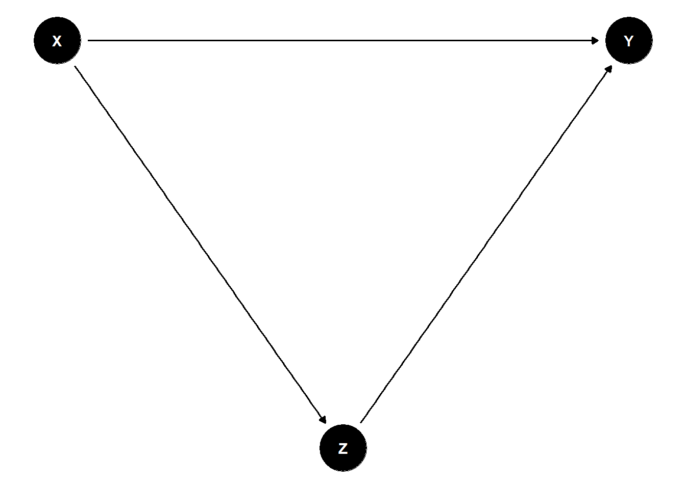
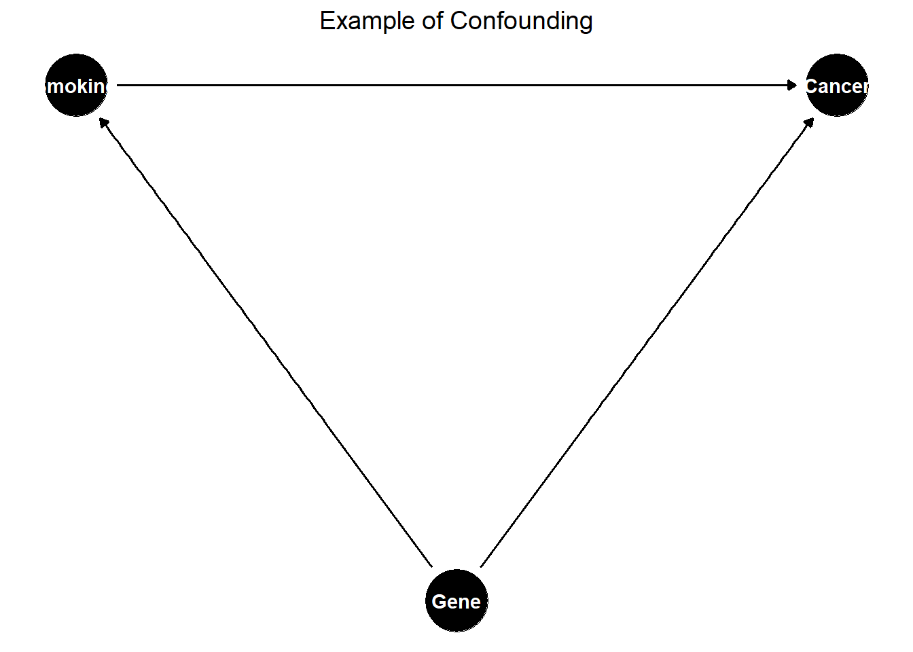
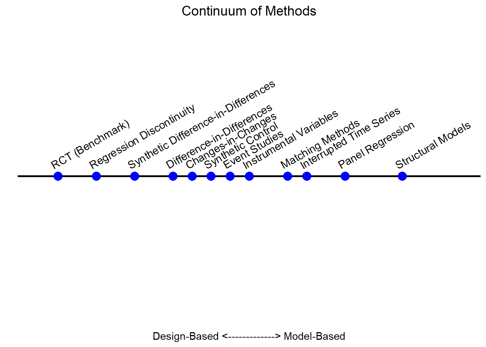

35 Quasi-Experimental Methods
Randomized experiments are the gold standard for causal inference. In most settings that matter to applied researchers (evaluating a national policy, a marketing campaign, a regulatory ruling, or a sweeping organizational change), running an experiment is impractical, unethical, or politically impossible. You cannot randomly assign tax rates to households, lockdowns to countries, or layoffs to factories. The methods in this part of the book exist because the world keeps refusing to cooperate with our preferred research design.
Quasi-experimental methods accept that constraint and ask a more modest question: when nature, history, or institutions hand us variation that resembles random assignment, can we recover something close to a causal effect? The answer is a qualified yes. Building on the experimental design foundations from the previous part, we will examine strategies that use observational data (typically with pre- and post-intervention measurements) and exploit naturally occurring, plausibly exogenous variation that mimics random assignment. The payoff is the ability to study real, large-scale interventions in realistic settings. The cost is a set of identifying assumptions that must be argued for rather than designed in, and a more cautious story about what the estimate generalizes to.
A few considerations should shape how you read every chapter that follows:
The first is representativeness. A quasi-experiment exploits a particular setting: a particular state’s policy, a particular firm’s reorganization, a particular cohort’s eligibility window. The estimate is, in the first instance, an answer for that setting. Whether and how it extrapolates to other contexts is a separate question, and one that researchers often gloss over.
The second is the limitations of the design. Each method rests on an identifying assumption that cannot be tested directly: parallel trends, continuity, exclusion, unconfoundedness. Pre-trend tests, placebo tests, and sensitivity analyses can make the assumption more plausible, but they cannot prove it. A useful habit when reading quasi-experimental work is to ask: if this estimate were biased, what would have to be true?
The third is integration with structural models. A reduced-form quasi-experimental estimate tells you that an intervention had some effect on average, in a particular setting. It does not, by itself, tell you why, through what mechanism, or what would happen under a counterfactual policy that was not actually implemented. Combining quasi-experimental estimates with structural or theoretical models (calibrating a model to match a credible reduced-form moment, for instance) is one of the most fertile directions in modern empirical research; Anderson et al. (2015), Einav et al. (2010), and Doug J. Chung et al. (2014b) are useful examples to read alongside this chapter.
These tools are now central to applied research across economics, marketing, political science, public health, and increasingly to internal data science teams at large firms. The conceptual machinery is the same in every domain. The art is in matching it to the right setting.
35.1 Identification Strategy in Quasi-Experiments
Quasi-experiments lack the formal statistical proof of causality that randomization buys you. Random assignment makes the comparability of treated and untreated groups a property of the design itself; once you give up randomization, comparability has to be argued for, not assumed. The credibility of the study ultimately rests on whether the reader is persuaded that the variation being exploited is genuinely as good as random, given the assumed controls. The reader is allowed to remain skeptical, and a good study anticipates that skepticism.
A defensible identification strategy almost always rests on three pillars. The first is a story about where the exogenous variation comes from, what feature of the world made some units treated and others not, in a way the units themselves did not engineer. The second is an argument that the variation affects the outcome only through the proposed channel, so we are not picking up some other consequence of the same shock. The third is a check that one unit’s treatment does not contaminate another’s outcome, since causal inference at the unit level breaks down when treatments leak across units.
- Sources of Exogenous Variation. Where does the variation come from, and why is it plausibly unrelated to unobserved determinants of the outcome? This pillar lives or dies on institutional knowledge: a policy that was passed for reasons unrelated to the outcome, a lottery, a discontinuous eligibility rule, an unexpected weather shock, an administrative quirk. The author has to know the setting well enough to tell a believable story, and that story has to survive contact with reasonable counter-stories.
- Exclusion Restriction. Even if the variation is exogenous, it might affect the outcome through more than one channel. The exclusion restriction is the claim that the variation reaches the outcome only through the treatment of interest. Ruling out alternative channels usually requires a combination of theory, falsification tests on placebo outcomes, and careful institutional argument.
- Stable Unit Treatment Value Assumption (SUTVA). Unit \(i\)’s outcome depends only on unit \(i\)’s treatment, not on the treatment of other units. Spillovers, peer effects, and equilibrium responses all violate this. SUTVA shows up explicitly in the next section, but it lurks in every design.
Every quasi-experimental method also involves a tradeoff between statistical power and support for the exogeneity assumption. The cleaner the source of variation, the narrower the slice of data that uses it: a Regression Discontinuity design discards observations far from the cutoff, an Instrumental Variables design throws away variation in the treatment that is not driven by the instrument, a Difference-in-Differences design ignores levels and reads only off differences. You buy credibility by burning information. A study that uses the entire sample and claims a clean causal effect is, more often than not, leaning on assumptions it has not stated.
35.1.1 Practical Notes on Inference
A handful of practical points recur across nearly every chapter that follows. Each is a small detail with a large downstream effect, and each is the kind of point that referees flag too late. The list below is not exhaustive, and additional considerations specific to particular designs will surface as we move through each method.
\(R^2\) is not a measure of causal credibility. A regression with an \(R^2\) of 0.9 can be hopelessly biased, and a regression with an \(R^2\) of 0.05 can identify a clean causal effect. What matters is whether the variation in the regressor is exogenous, not how much of the outcome’s variance the model explains. Ebbes et al. (2011) is the canonical warning. Reviewers occasionally ask for higher \(R^2\); this is the wrong demand.
Clustering of standard errors is a design question, not a fishing expedition. The unit at which you cluster should reflect the level at which treatment was assigned, or the level at which observations are plausibly correlated by virtue of design. It should not be chosen to produce a more comfortable \(p\)-value. Abadie et al. (2023) make the design-based case rigorous and is required reading before you cluster anything.
In small samples, the cluster-robust variance estimator is biased downward, and the wild bootstrap is the standard correction (Cameron et al. 2008; Cai et al. 2022). “Small” here can mean fewer than 30 or so clusters, which is uncomfortably common in state-level policy studies. Use the wild bootstrap by default in such settings rather than waiting until it is requested.
Pre-specify outcomes, controls, and subgroups whenever possible. Quasi-experimental designs cannot be re-randomized, but they can be re-analyzed many times across many specifications, and the analyst’s choices are not invisible to the resulting \(p\)-values. A pre-analysis plan, even an informal one written before looking at outcomes, is the cheapest defense against accidental specification searching, and it is what separates a credible exploratory analysis from one that has been quietly tuned for significance.
Report effect sizes, not just \(p\)-values. Statistical significance and economic significance are not the same thing, and a tiny effect estimated very precisely can be statistically significant without being practically interesting. Always present point estimates with confidence intervals in the units of the outcome (or as a percentage of a baseline mean), so that a reader can judge magnitude rather than only direction.
Beware bad controls. Adding “more controls” is not always a defensive move. Conditioning on a variable that is itself caused by treatment, on a collider, or on a mediator can introduce bias rather than remove it. The DAG-driven discipline is to derive the adjustment set from a candidate causal structure and resist the urge to add covariates outside it.
35.2 Establishing Mechanisms
Identifying a causal effect is the start of an empirical project, not the end. Knowing that a job training program raises earnings on average is useful, but it leaves the harder questions open: did earnings rise because participants gained marketable skills, because the program signaled effort to employers, because it nudged people into denser labor markets, or because of some combination of all three? Did the effect concentrate among workers who would have struggled most without the program, or among those who needed it least? An estimate without a mechanism is hard to extrapolate, hard to improve on, and hard to defend in the policy conversation that usually follows.
The two most common mechanism-oriented questions are how the treatment works and for whom it works. The first is the territory of mediation analysis, which decomposes a total effect into the part that flows through some intermediate variable and the part that does not. The second is the territory of moderation analysis, which asks whether the treatment’s effect is uniform across subgroups or whether it concentrates somewhere identifiable. Both have their uses, and both are easy to misread. The remainder of this section walks through what each can deliver and where each tends to break down.
35.2.1 Mediation Analysis: Explaining the Causal Pathway
Mediation analysis tries to open the black box between treatment and outcome. Concretely, it asks whether the effect of a treatment \(T\) on an outcome \(Y\) travels through some intermediate variable \(M\), called the mediator. The total effect is then decomposed into a direct effect that flows from \(T\) to \(Y\) without going through \(M\), and an indirect effect that flows \(T \to M \to Y\). Letting
- \(T\) = treatment,
- \(M\) = mediator,
- \(Y\) = outcome,
the conceptual decomposition is
\[ \underbrace{\text{Total effect of } T \text{ on } Y}_{T \to Y} \;=\; \underbrace{\text{Direct effect}}_{T \to Y \text{ not through } M} \;+\; \underbrace{\text{Indirect effect}}_{T \to M \to Y}. \]
The decomposition looks innocent. The identification problem is anything but. To interpret either piece causally, you need two layers of as-good-as-random variation: one that delivers exogenous variation in \(T\), and another that delivers exogenous variation in \(M\) given \(T\). The standard formal version of this is sequential ignorability: treatment is as good as random unconditionally (or conditional on baseline covariates), and the mediator is as good as random conditional on treatment and covariates (Imai, Keele, and Tingley 2010). The second part is the demanding one. In most observational studies, the same forces that drive \(M\) also drive \(Y\), so any estimated indirect effect is contaminated by mediator-outcome confounding.
Several estimation strategies are common, listed below in increasing order of the assumptions they require you to defend.
The first is the causal mediation framework of Imai, Keele, and Tingley (2010), which provides nonparametric estimators of the average direct and indirect effects under sequential ignorability. The headline benefit is that you do not need to commit to a particular functional form. The headline cost is that the assumption is untestable, so the framework is most useful when paired with a sensitivity analysis showing how strong unobserved mediator-outcome confounding would have to be to overturn the conclusion.
The second is the two-stage regression approach, which fits the mediator and outcome equations sequentially:
\[ \begin{aligned} M_i &= \alpha + \tau\, T_i + \varepsilon_i, \\ Y_i &= \beta + \gamma\, T_i + \delta\, M_i + \eta_i. \end{aligned} \]
The product \(\tau \cdot \delta\) is read as the indirect effect, and \(\gamma\) as the direct effect. This is the “Baron-Kenny” tradition. It is fast, transparent, and biased whenever \(M_i\) is correlated with \(\eta_i\), that is, whenever there is unobserved mediator-outcome confounding. Treat the two-stage regression as a first-pass description, not a causal decomposition.
The third is instrumental-variable mediation, in which an instrument is found that affects \(Y\) only through \(M\) (after \(T\) is accounted for). Done right, this gives a credible LATE on the mediated channel. Done wrong, and it is easy to do wrong, it gives a confidently estimated artifact. The main difficulty is finding an instrument for \(M\) that is not also an instrument for \(T\) via some other route.
Mediation questions show up everywhere. In marketing: does an ad raise sales because it lifted brand awareness, or for some other reason? In education: does a tutoring program raise test scores by improving attendance, by raising motivation, or by signaling parental involvement? In labor economics: does job training raise wages because it built skills, because it shifted workers into better matches, or because of stigma effects on the control group?
Caution. Mediation analysis is one of the most overused tools in applied empirical work. The math goes through; the identification rarely does. If your study did not randomize the mediator, treat any decomposition you produce as descriptive, report a sensitivity analysis, and pair the analysis with theoretical argument. A clean total effect with an honest mechanism story usually persuades more than a precise but heroic decomposition.
35.2.2 Moderation Analysis: For Whom or Under What Conditions?
Where mediation asks how a treatment works, moderation asks when it works and for whom. The same intervention can lift outcomes substantially in one subgroup and barely move the needle in another, and an average effect that pools across subgroups can hide that heterogeneity completely. Moderation analysis is the toolkit for surfacing it.
The questions that drive moderation are concrete: do effects differ by gender, income, region, or baseline outcome status? Is the program more effective for high-need participants, or for early adopters who would have done well anyway? Does the treatment work in dense urban labor markets but not thin rural ones? An honest moderation analysis is what separates a finding that “the program raised earnings by 4%” from a finding that “the program raised earnings by 12% among workers with prior unemployment spells and had no detectable effect on others”, two very different policy conclusions from the same dataset.
Several estimation strategies dominate practice. Subgroup analysis simply re-estimates the effect separately within each subgroup and compares the resulting estimates. It is transparent, easy to explain, and risks two mistakes: comparing noisy estimates as if they were precise, and slicing the data into so many subgroups that some “significant” difference is bound to appear by chance. Pre-specifying subgroups and correcting for multiple testing (see the natural-experiments section below) is the standard discipline.
Interaction models put the moderator inside a single regression by including a treatment-by-moderator interaction:
\[ Y_{it} = \alpha + \beta_1 T_{it} + \beta_2 Z_i + \beta_3 (T_{it} \times Z_i) + \varepsilon_{it}, \]
where \(Z_i\) is the moderator (e.g., a high-income indicator). The coefficient \(\beta_3\) is the difference in the treatment effect between the two groups, and \(\beta_1\) is the effect for the reference group. The most common error here is reading \(\beta_1\) as “the treatment effect”, it is the treatment effect only when \(Z_i = 0\). Always interpret main effects and interactions jointly, and plot the implied marginal effects across the relevant range of \(Z_i\).
Difference-in-Differences with moderation scales this up to a panel setting, using a three-way interaction:
\[ Y_{it} = \alpha + \beta_1 \text{Post}_t + \beta_2 \text{Treat}_i + \beta_3 Z_i + \beta_4 (\text{Post}_t \times \text{Treat}_i) + \beta_5 (\text{Post}_t \times \text{Treat}_i \times Z_i) + \varepsilon_{it}. \]
Now \(\beta_4\) is the DiD effect for the reference moderator group and \(\beta_5\) is the difference in DiDs between groups. As before, the parallel-trends assumption applies separately within each value of \(Z_i\), a moderation analysis can collapse if pre-trends differed across the subgroups even before treatment was introduced.
For all three strategies, visualization is not optional. A marginal-effects plot showing the treatment effect across values of \(Z_i\), with confidence bands, communicates moderation more honestly than any table of regression coefficients. Interaction plots, separate regression lines by group, make subgroup heterogeneity legible at a glance. Tabulating only \(\beta_5\) and its \(p\)-value will mislead any reader who has not already done the same analysis themselves.
Table 35.1 summarizes the goals, key assumptions, and common pitfalls of the three mechanism-analysis approaches discussed above (mediation, subgroup analysis, and interaction terms), so that the right tool can be matched to the question at hand.
| Approach | Goal | Key Assumptions | Common Pitfalls |
|---|---|---|---|
| Mediation | Identify intermediate variables | Sequential ignorability, no omitted confounders | Mediators may be endogenous |
| Subgroup Analysis | Estimate effects by group | Sufficient sample size, balanced covariates | Spurious differences due to imbalance |
| Interaction Terms | Estimate conditional effects | Correct model specification | Misinterpretation of non-significant terms |
Mediation and moderation are complementary bridges between empirical estimates and theory. Mediation connects estimates to process theories, accounts of how a treatment brings about change, while moderation connects estimates to contingency theories, accounts of when and for whom a treatment works. A complete empirical paper rarely has room for both, but a clear sense of which one your study is really speaking to keeps the framing honest. In applied business research, the practical payoff is direct: mediation guides product and intervention design (which channels do we need to invest in to get the effect?), while moderation guides targeting and personalization (which customers should we focus on?). A retention experiment, for instance, might use mediation to show that customer satisfaction is the channel through which a loyalty program lifts renewal rates, and use moderation to show that the lift is concentrated among newer customers rather than long-tenured ones. The two findings together imply an actionable strategy that neither would deliver on its own.
35.3 Robustness Checks
A robustness check earns its name when it could plausibly overturn the result. Most published robustness sections do not pass that bar, they tweak a control set or a sample window in ways that would never have moved the headline estimate, and they call the unchanged number “robust”. A useful robustness program does the opposite: it asks how the estimate would have to behave if the identifying assumption were wrong, then it tries to find that behavior in the data.
Goldfarb et al. (2022) offer a well-organized review of the practice in marketing and management; the checks below collect the most common ones. Treat them as a menu, not a checklist, applying every check to every study is overkill, and applying none to any study is malpractice.
The first family is alternative control sets. Run the regression with no controls, with the baseline controls, and with the kitchen-sink set. If the estimate moves substantially when you add a particular covariate, that covariate is doing real work and you owe the reader an explanation of why it is or is not part of the right specification. The discipline here links closely to coefficient-stability bounds and to Rosenbaum bounds (Altonji et al. 2005): both formalize the question of how much unobserved confounding would be needed to overturn your conclusion, expressed in units of the observed confounders. If “twice as much confounding as everything I observed combined” is enough to kill the result, the result is fragile. Marketing applications include Manchanda et al. (2015) and Shin et al. (2012). A complementary discipline, covered in the bad controls chapter, is to make sure that the kitchen-sink set is not actually introducing bias by conditioning on colliders or post-treatment variables, an overcontrol-bias problem that can flip the sign of the estimate.
The second is different functional forms. If your conclusion depends on a particular linear or log specification, the worry is that you have absorbed a nonlinear pattern into the treatment coefficient. Re-estimate with non-linear, semi-parametric, or fully flexible specifications and check whether the sign and magnitude survive. When they do, the simpler specification is supported. When they do not, the sensitivity itself is informative. In RD designs in particular, varying the polynomial order of the running-variable control is the standard form of this check.
The third is varying time windows in longitudinal settings. Did the effect appear because of one unusual year? Does it depend on including or excluding the recession, the election, the supply-chain disruption? Trim the panel from each end and re-estimate. Designs that read off a single “interesting” year tend not to replicate. In Difference-in-Differences the natural extension of this check is to vary the pre- and post-treatment window length, and in Interrupted Time Series it is to vary the bandwidth of the segments around the intervention date.
The fourth is alternative dependent variables. Most theoretical mechanisms make predictions about more than one outcome. If your story is right, related outcomes should move in predictable directions; outcomes that the mechanism does not touch should not move at all. The latter, placebo outcomes (or falsification outcomes), is the more powerful test. A treatment that “works” on placebo outcomes is a treatment whose mechanism has been mis-specified, or whose identifying assumption has been violated.
The fifth is varying the control group composition, especially in matching or quasi-experimental designs that select an untreated comparison group. Compare results across raw, matched, and trimmed samples, across different matching algorithms (propensity-score matching, Mahalanobis, coarsened exact matching, genetic matching), and across plausible donor pools in a Synthetic Control setting. Estimates that swing wildly with reasonable changes to the comparison group are not estimating a stable parameter, and the resulting heterogeneity is often more informative about the design than the headline number itself.
The sixth is placebo tests of the design itself. The right placebo depends on the method: a fake treatment date in DiD, a fake cutoff in RD, a fake instrument in IV, an event window in a year with no event in an event study. Each subsequent chapter spells out the canonical placebo for the method it covers. A study with no placebo test is one that has not asked itself whether the design could detect a non-effect.
Two further checks deserve mention because they cut across designs. Pre-trend visualizations (visualizing parallel trends in DiD, density tests like McCrary’s at an RD cutoff, leads in an event study) reveal whether the identifying assumption was already failing before treatment. And in panel designs with staggered adoption, the modern estimators for staggered DiD and the diagnostics in modern concerns in DiD, including the Goodman-Bacon decomposition and partial-identification approaches like HonestDiD, serve as built-in robustness checks against the negative-weighting pathologies of the standard two-way fixed effects estimator.
A practical rule of thumb: present robustness graphically wherever possible, and put the most threatening check, the one that would make a smart skeptic uncomfortable, at the front of the table, not buried in the appendix. Transparency about weakness is, paradoxically, the strongest defense of a credible design.
35.4 Limitations of Quasi-Experiments
Quasi-experimental methods are powerful, but their power comes with strings attached. Because identification rests on observational variation and not on a researcher-controlled assignment mechanism, the assumptions doing the heavy lifting are more stringent, less testable, and easier to violate than the corresponding assumptions in a randomized trial. A serious quasi-experimental paper does not merely state its identifying assumption; it stress-tests it and reports what it found, even when the news is uncomfortable.
The remainder of this section organizes the standard limitations around four questions that researchers and critical readers should both keep in front of them: what is being assumed, what threats could undermine the result, how those threats can be probed, and what the resulting estimate generalizes to. The questions stack: a study that cannot answer the first has no business attempting the others.
35.4.1 Identifying Assumptions
Every quasi-experimental method substitutes a specific identifying assumption for randomization. The shape of that assumption changes from method to method, but its function is always the same: to license a counterfactual comparison that the data alone cannot deliver.
Difference-in-Differences rests on parallel trends: in the absence of treatment, the treated and control groups would have followed the same outcome trajectory. The assumption is unverifiable by definition, we never observe the treated group’s untreated outcome after treatment, but it can be made more or less plausible by the pre-treatment data.
Regression Discontinuity rests on continuity at the cutoff: units just above and just below the threshold differ only in their treatment status, not in unobserved characteristics. The credibility of this assumption hinges on whether agents could precisely manipulate their position relative to the cutoff.
Instrumental Variables require exogeneity and exclusion: the instrument is unrelated to unobserved determinants of the outcome, and affects the outcome only through the treatment of interest. Of all the assumptions in this part, the exclusion restriction is the one most likely to be quietly violated, because there are usually many channels through which a shock can travel.
The best practice across all three is the same: visual diagnostics, historical evidence, and pre-trend analyses make the assumption more plausible; nothing makes it certain.
35.4.2 Threats to Validity
Even when the identifying assumption is well-stated, the design can fail through any of a small number of standard threats. Each is worth recognizing on sight.
Unobserved confounding is the umbrella worry: variables that drive both treatment and outcome are not in the model, and the estimated effect picks up their contribution. This is the canonical omitted-variable-bias problem, sometimes called selection on unobservables when the unobserved factor is what drives selection into treatment. It is most acute in pure cross-sectional designs and in any setting where the assignment mechanism is ill-understood.
Violation of SUTVA through spillovers, interference between units, or hidden treatment heterogeneity makes potential outcomes ill-defined. A vaccination program, for example, lowers infection risk for the unvaccinated; an advertising campaign reaches consumers through word of mouth; a job training program shifts the labor market for the untrained. In each case, the “control” group has not actually been left alone.
Anticipation effects and pre-treatment trends corrupt the counterfactual: if treated units adjust their behavior before treatment is implemented (because they expect it), or if the treated and control series were already diverging for unrelated reasons, the post-treatment comparison conflates the treatment effect with whatever was driving the pre-period divergence. In a DiD framework, this is exactly the failure of parallel trends; in an event study, it manifests as non-zero pre-event coefficients.
Measurement error, especially in the assignment variable, attenuates effects in regression-discontinuity designs and biases the discontinuity estimate. The general theory of classical and non-classical measurement error is covered in the measurement-error chapter. In IV settings, measurement error in the instrument exacerbates the weak-instrument problem.
Manipulation or sorting around a cutoff undermines the quasi-randomness that an RD design depends on; the dedicated discussion lives in sorting, bunching, and manipulation, and the standard formal diagnostic is the McCrary density test. If applicants can nudge their score from 79 to 81, a study that compares applicants on either side of an 80 cutoff is no longer comparing as-good-as-random units, and one common response is to switch to a fuzzy RD that does not assume sharp compliance with the cutoff rule.
Limited overlap quietly restricts what the design identifies. Some IV studies estimate effects only on compliers; some matching studies on the small subpopulation where treated and control units share covariate values; some RD studies on the narrow band near the cutoff. The estimate is what the design supports, not what the policy debate would prefer.
The right discipline is to walk the reader through each threat, explain why it is or is not a concern in your setting, and (where possible) report the test or diagnostic that backs up the explanation.
35.4.3 Addressing Threats to Validity
Robustness and sensitivity checks (covered in the previous section) are how you make threats concrete instead of rhetorical. The most commonly useful are placebo tests on periods or groups where no treatment occurred, falsification outcomes that the treatment should not affect, pre-trend diagnostics for DiD, bandwidth and polynomial sensitivity for RD, alternative specifications across the modeling choices that a reader might second-guess, and heterogeneity analysis that surfaces where the identifying assumption is most vulnerable.
A graphical robustness plot, coefficient estimates across, say, twenty plausible specifications, communicates more than a paragraph of prose ever will. Transparency about which checks were tried, including the ones that did not flatter the headline result, is what distinguishes a credible study from a tidy one.
35.4.4 External Validity and Future Research
Even a clean estimate is, in the first instance, an answer for a particular sample, a particular setting, and a particular slice of the population the design happens to identify. Several concerns about external validity recur across the chapters that follow. Table 35.2 catalogs the most common threats by design family, alongside a representative diagnostic and the standard remedy or check, so that a reader confronting any one of these methods has a quick map of what to look for.
The first is the scope of identification: many designs deliver a Local Average Treatment Effect rather than the population ATE (see the estimand glossary for the formal definitions). A judge-IV / examiner-design study identifies effects only for marginal defendants; an RD identifies effects only at the cutoff; a DiD identifies the ATT on the treated. These are not bugs, they are the price of credibility, but they should be reported as the estimand, not relabeled as “the” effect.
The second is sample and setting specificity. A policy evaluated in one state may not generalize to another with different labor markets, different demographics, or different baseline outcomes. A platform experiment in one product category may not generalize across categories. Generalization is a substantive claim that requires substantive argument, not a default.
The third is policy relevance. Even when the estimate is internally valid and externally portable, the scale of the intervention may differ from the policy under discussion: a small pilot may not generalize to a national rollout because of equilibrium effects, congestion, or political feedback. State this honestly when it applies.
The honest limitations section also points to future work. New sources of exogenous variation, structural extensions that extrapolate carefully beyond the identified estimand, sharper diagnostics for assumption testing, and replications in adjacent settings are all natural next steps. The best papers turn their limitations into a research agenda rather than burying them in a paragraph before the conclusion.
| Threat | Example Design | Diagnostic Tool | Remedy or Check |
|---|---|---|---|
| Unobserved Confounding | Matching, DiD | Pre-trend test, covariate balance | Sensitivity analysis, falsification outcomes |
| Violation of Parallel Trends | DiD | Pre-treatment trends plot | Group-specific trends, triple differences |
| Manipulation of Assignment Variable | RD | Density test (McCrary) | Exclude manipulated region, use fuzzy RD |
| Spillovers / Interference | All | Spatial or network data analysis | Clustered design, SUTVA discussion |
| Narrow Population of Compliers | IV | Covariate balance for compliers | Bounding methods, report LATE clearly |
Quasi-experimental methods are powerful, but their strength lies not in perfection, but in transparency. A well-documented quasi-experiment, with clear limitations and open discussion of assumptions, often contributes more to scientific knowledge than a poorly reported experiment. As we proceed through the chapters, you will see both exemplary and problematic applications of these methods, with an emphasis on the discipline required to make credible causal claims from imperfect data.
35.5 Assumptions for Identifying Treatment Effects
Three assumptions do almost all of the work that holds quasi-experimental causal inference together: the Stable Unit Treatment Value Assumption (SUTVA), the conditional ignorability (or unconfoundedness) assumption, and the overlap (or positivity) assumption. Each plays a distinct role. SUTVA defines what we mean by a potential outcome in the first place, so that the comparison we are about to make is well-posed. Conditional ignorability ensures that, given the right covariates, the treatment is as good as random, so the comparison is not contaminated by selection. Overlap ensures that there are units to compare, in both treatment arms, across the relevant range of covariates, so the comparison is feasible.
The three assumptions are usually presented together because all three must hold for the standard estimators of the average treatment effect to be unbiased. Violate SUTVA and the potential outcome is ill-defined; violate ignorability and the comparison is confounded; violate overlap and the comparison cannot be made on at least part of the support.
- Stable Unit Treatment Value Assumption (SUTVA)
- Conditional Ignorability (Unconfoundedness) Assumption
- Overlap (Positivity) Assumption
The remainder of this section walks through what each assumption means, when it tends to fail, and what to do when it does.
35.5.1 Stable Unit Treatment Value Assumption
SUTVA is the assumption you do not realize you are making until it is violated. Two components hold it together. The first, consistency, requires that the treatment indicator \(Z \in {0,1}\) refers to a single, well-defined intervention, there are no hidden versions of “treatment” lumped together under one label, because if there were, the potential outcome we want to compute would not be unique. The second, no interference, requires that one unit’s outcome does not depend on another unit’s treatment assignment. Together, these two components are what make the symbol \(Y_i(Z_i)\), unit \(i\)’s potential outcome under its own treatment \(Z_i\), meaningful at all. They are the foundation of Rubin’s Causal Model. When SUTVA is violated, estimators of the ATE can be both biased and report standard errors that are simultaneously off in unpredictable directions.
To see what SUTVA actually buys you, write out the unrestricted potential outcome for unit \(i\) when there are \(N\) units, each with a binary treatment, and let \(\mathbf{Z} = (Z_1, \dots, Z_N)\) denote the full vector of treatment assignments. In full generality, unit \(i\)’s potential outcome is a function of the entire vector,
\[ Y_i(\mathbf{Z}) = Y_i(Z_i, \mathbf{Z}_{-i}), \]
where \(\mathbf{Z}_{-i}\) collects the treatment assignments of all units other than \(i\). Under SUTVA, the potential outcome collapses to depend only on unit \(i\)’s own treatment:
\[ Y_i(\mathbf{Z}) = Y_i(Z_i) \qquad \text{for all } \mathbf{Z}_{-i}. \]
That collapse, from a function of \(N\) arguments to a function of one, is what licenses every standard formula for the ATE you will see in the chapters that follow. Without it, the symbol \(Y_i(1)\) is ambiguous because it could refer to many different potential outcomes depending on what everyone else got assigned.
35.5.1.1 Implications of SUTVA
When SUTVA holds, the average treatment effect has a clean definition:
\[ \text{ATE} = \mathbb{E}[Y_i(1)] - \mathbb{E}[Y_i(0)], \]
and the estimators in the chapters that follow have a target to aim at. When SUTVA fails, the target itself becomes blurry, and the standard estimators will dutifully aim at whatever blurry thing they are pointed at, with confidence intervals that overstate their precision.
Two failure modes recur. The first is interference, the treatment of one unit changes the outcome of another. A loyalty program rolled out to a fraction of customers may influence the untreated through word of mouth; a vaccine reduces infection risk for the unvaccinated; a tax break for one industry shifts labor and capital away from the others. The fix is not to deny that interference exists but to model it: spatial econometrics for geographic spillovers, network-based causal inference for social spillovers, randomized saturation designs for engineered ones.
The second is hidden treatment heterogeneity, what we call “the treatment” is in fact a mixture of distinguishable interventions. A sales promotion might mean a 10% discount for some customers and a 25% discount for others; a job-training program might run for six weeks in one site and twelve in another. Lumping these together estimates an average over an undefined mixture. The fix is to model the heterogeneity explicitly, either by defining the version of treatment that each unit received or by using principal stratification to characterize subpopulations whose response differs.
Both failure modes are summarized in Table 35.3.
| Issue | Consequence |
|---|---|
| Bias in Estimators | If interference is ignored, treatment effects may be over- or underestimated. |
| Incorrect Standard Errors | Standard errors may be underestimated (if spillovers are ignored) or overestimated (if hidden treatment variations exist). |
| Ill-Defined Causal Effects | If multiple treatment versions exist, it becomes unclear which causal effect is being estimated. |
When SUTVA is unlikely to hold, which is the case in most economic, marketing, and platform settings, researchers face a choice. They can argue that the violation is small enough to ignore (sometimes correct, often wishful thinking), they can adopt a methodology that explicitly models interference or treatment heterogeneity, or they can redesign the study at a higher level of aggregation where one cluster’s “treatment” no longer leaks into another’s “control”. Each choice has implications for what the estimand is, and the next chapter on each method will return to this question repeatedly.
35.5.1.2 No Interference
The no-interference component of SUTVA says that one unit’s treatment does not affect another unit’s outcome. The phrase sounds anodyne in the abstract; in practice it is the most frequently violated assumption in this entire toolkit. Vaccines reduce community transmission, so the unvaccinated benefit from others’ vaccinations. Online ads spill from targeted users to their friends through conversation, recommendations, and reshares. Cash transfers in a village shift local prices and labor supply, affecting non-recipients. To an epidemiologist these are spillovers; to an economist they are externalities; to a sociologist they are peer effects. To the statistician trying to define \(Y_i(0)\), they all amount to the same problem: the “control” outcome depends on what was done to the treated, so it is no longer the counterfactual we want.
Formally, with \(\mathbf{Z} = (Z_1, \dots, Z_N)\) the full vector of treatment assignments, no interference means
\[ Y_i(\mathbf{Z}) = Y_i(Z_i), \]
so unit \(i\)’s potential outcome is a function only of its own treatment. When this fails, a useful relaxation is to allow interference within a neighborhood of \(i\), typically the set of social contacts, geographic neighbors, or trading partners that could plausibly transmit a spillover:
\[ Y_i(\mathbf{Z}) = Y_i(Z_i,\, \mathbf{Z}_{\mathcal{N}(i)}), \]
where \(\mathcal{N}(i)\) is the neighborhood function for unit \(i\). If \(\mathcal{N}(i) \neq \emptyset\), SUTVA in its strictest form is violated, but the structure of \(\mathcal{N}(i)\) tells us something useful, the spillover is local, and we can model it with spatial econometrics, network-based causal inference, or graph-based treatment-effect estimators rather than abandoning the design.
35.5.1.2.1 Special Cases of Interference
Several patterns of interference recur often enough to deserve names. Complete interference lets every unit’s outcome depend on every other unit’s treatment, as in a small fully connected social network or a single market where prices clear globally. The estimation problem here is hard precisely because \(\mathcal{N}(i)\) is the entire population. Partial interference restricts spillovers to within identifiable groups but not across them, students within a classroom influence each other but not students in other schools, customers within a retail catchment area but not in distant cities. Partial interference is the friendliest case empirically, because it lets you treat groups as independent units even when individuals within a group are not. Network interference sits in between: spillovers travel along a known graph (Twitter follows, supply-chain relationships, residential streets), and the goal is to use the graph structure to model the transmission of treatment effects rather than to assume it away. Each pattern calls for different identification arguments, and each is now a small literature in its own right.
Statisticians and economists tend to talk about no-interference using two different vocabularies that mean roughly the same thing. Economists hear the phrase and immediately translate it into a battery of familiar bromides: “no externalities”, “no peer effects”, “partial equilibrium”, “small shock in a big market”, “no strategic interaction”. Each of these is a way of saying one agent’s behavior does not influence another’s outcomes, with the emphasis on which channel is being assumed away. Table 35.4 lines up the statistical phrasing alongside the economic phrasing and the underlying intuition, so a statistically trained reader can follow an economist’s argument without translation lag and vice versa.
| Statistical Term | Economic Translation | Economic Intuition |
|---|---|---|
| No interference between units | No externalities | My treatment does not affect your utility or production function |
| Outcomes depend only on own treatment | No peer effects | My grade is unaffected by whether my classmates are treated |
| Unit’s treatment does not affect prices | Partial equilibrium | Market prices remain fixed regardless of who is treated |
| Treated unit is infinitesimal | No general equilibrium feedback | Treated fraction too small to shift aggregate supply/demand |
| No network dependence | No spillovers | No migration, contagion, or supply-chain effects to others |
In most economic settings, no-interference is a very strong assumption, and it is unlikely to hold exactly. Markets are connected, so a price change in one market can propagate to substitutes and complements. Agents are strategic, so competitors, consumers, and workers adjust their behavior in response to the treatment of others. Resources are scarce, so treatments that pull workers, capital, or credit toward one use draw them away from another. Networks of information, migration, and contagion link outcomes that the analyst would prefer to think of as separate.
Economists routinely manage this difficulty by adopting a partial equilibrium view: analyze a slice of the market that is small enough that general equilibrium feedback can plausibly be ignored, and let everything else come along for the ride. Sometimes this is honest, a tiny shock in a large competitive market really does have negligible spillovers. Sometimes it is wishful, and the right response is either to model the spillover explicitly or to admit that the design identifies a partial-equilibrium quantity that the policy debate may not actually care about. Table 35.5 collects canonical violations and the channel through which each operates.
| Scenario | Why Interference Occurs | Type of Spillover |
|---|---|---|
| Housing voucher experiment | Treated households bid up rents in the same area | Price-mediated spillover |
| Tax break to one industry | Shifts labor and capital into that industry, affecting others | Factor market reallocation |
| Vaccination program | Reduces disease prevalence for all | Epidemiological spillover |
| New export subsidy | Alters exchange rate, affecting other exporters | Macroeconomic spillover |
There are settings where no-interference is genuinely defensible rather than aspirational. Treatments randomized at the individual level when only a tiny fraction of the population is treated tend to produce negligible spillovers, because there is not enough density of treated units to generate community effects. Units that are geographically, socially, and economically isolated, small towns separated by long distances, classrooms in different states, have few channels through which to interfere with each other. Outcomes that are realized before any interaction could occur (an exam taken on the day of the intervention) cannot be contaminated by a slow-moving spillover. Sealed laboratory experiments enforce no-interference by physical design.
Key takeaway. Statisticians define no-interference narrowly: my potential outcomes depend only on my own treatment. Economists translate the same idea into a battery of market-isolation assumptions, usually under a partial-equilibrium frame. In most real economic settings the challenge is not whether to assume no-interference but how to model and estimate the ways in which it fails, through cluster-randomized designs, network-aware estimators, equilibrium adjustments, or honest scope-of-identification statements about who actually counts as the “control” group.
35.5.1.4 Strategies to Address SUTVA Violations
When SUTVA is violated, the appropriate response is redesign rather than reassurance. Several approaches recur often enough to be worth recognizing, each suited to a different failure mode.
A randomized saturation design is the most direct way to measure spillovers rather than assume them away. Treatment is assigned not just to individual units but to clusters at varying intensities, some clusters get 10% of units treated, others 30%, others 60%, so that the spillover function can be estimated from variation in saturation, not just from variation in own-treatment. The design recovers both the direct and the indirect effects, but it requires the ability to engineer the saturation, which usually means a partnership with the program implementer.
Network-based causal models apply when units sit on an observable graph (a social network, a supply chain, a road network). Adjacency matrices and graph-based estimators let the spillover travel along the edges, so the model says “your outcome depends on your treatment plus a function of your neighbors’ treatments” rather than “your outcome depends only on yours”. The cost is having a credible network in hand, which is harder than it sounds, observed networks are typically noisy proxies for the true social structure.
Instrumental variables are the right tool when SUTVA is violated by hidden treatment versions rather than by interference: an IV that shifts one specific dimension of the treatment can isolate the response along that dimension and ignore the others.
Stratified analysis is the lowest-tech option for the hidden-versions case. If the variation in treatment is observable (different dosages, different durations), analyze each version separately and report a profile of effects rather than a single average. The reader gets to see the heterogeneity, and the analysis stops pretending it does not exist.
Dose-response methods are the higher-tech option for the same problem. When the variation in treatment is itself the substantive object of interest, that is, when the analyst wants to know how the effect scales with the dose rather than merely to avoid averaging across doses, dedicated continuous-treatment estimators are available in every major design family. The continuous-treatment difference-in-differences framework recovers the dose-response curve in panel data under parallel-trends-at-each-dose assumptions. The generalized propensity score for continuous treatments handles the cross-sectional case under a conditional-ignorability extension. The dose-response RD handles the threshold case in which the dose is a deterministic function of a running variable. The nonparametric IV for continuous treatments handles the case in which a continuous instrument is available to shift a continuous endogenous treatment. The right choice among these is dictated by the same structural questions that govern the choice among binary-treatment designs (panel or cross-section, cutoff or no, instrument or no), with the added wrinkle that continuous-treatment versions typically require more data to recover a curve than a binary version requires to recover a scalar.
Difference-in-Differences with spatial controls handles geographic spillovers by adding spatial-lag terms to the standard DiD specification. The treatment effect is then identified off variation that is local enough, close enough to the treated units to be relevant, far enough to be unaffected, which is a tightrope but a navigable one.
A pragmatic note: the best response to a SUTVA violation is rarely a single technique. Combine the design improvements (cluster-level treatment, saturation) with model improvements (network or spatial structure), and report both the spillover-adjusted estimate and the naive one so that the reader can see how much SUTVA was actually doing.
35.5.2 Conditional Ignorability Assumption
Once SUTVA gives us well-defined potential outcomes, the next question is whether comparing the treated and untreated groups actually identifies a causal effect. It will not unless the people who got treated would have, on average, looked like the people who did not, at least after we account for what we observe about them. This is the conditional ignorability assumption, and it is the workhorse identifying assumption of every observational design that does not exploit a structural source of exogenous variation.
The assumption travels under several names that all mean the same thing: conditional ignorability, conditional exchangeability, no unobserved confounding, no omitted variable bias. In the language of causal diagrams, it is the assumption that all backdoor paths from treatment to outcome have been blocked by the observed covariates \(X\). Formally, we require that the potential outcomes are independent of treatment assignment, given \(X\):
\[ Y(1), Y(0) \;\perp\!\!\!\perp\; Z \mid X. \]
What this buys you is a license to compare treated and untreated units within strata of \(X\) and to interpret the resulting differences as causal. What it does not buy you is certainty, because the assumption is fundamentally untestable, the only way to know it holds is to know all the relevant unobserved confounders, and if you knew them, they would not be unobserved.
There are two equivalent ways to write the assumption, and each is illuminating. The first writes it as a conditional independence between potential outcomes and treatment given covariates,
\[ P(Y(1), Y(0) \mid Z, X) \;=\; P(Y(1), Y(0) \mid X), \]
which says that within a stratum of \(X\), the distribution of potential outcomes does not depend on whether the unit was treated. The second flips the conditioning around to talk about the treatment-assignment mechanism,
\[ P(Z = 1 \mid Y(1), Y(0), X) \;=\; P(Z = 1 \mid X), \]
which says that within a stratum of \(X\), the probability of treatment does not depend on the potential outcomes. Both formulations express the same idea: once we know \(X\), treatment is as-if random. The second is sometimes more intuitive when thinking about the assignment process, would two units with the same \(X\) have had the same chance of being treated?, and it is the formulation that motivates the propensity-score machinery covered later in the matching chapter.
The payoff of ignorability is the identification formula for the ATE,
\[ \mathbb{E}[Y(1) - Y(0)] \;=\; \mathbb{E}\bigl[\,\mathbb{E}[Y \mid Z=1, X] \;-\; \mathbb{E}[Y \mid Z=0, X]\,\bigr], \]
which says that if you can estimate the conditional expectation of the outcome given treatment and \(X\) (a regression problem), you can recover the average treatment effect by averaging the differences across the distribution of \(X\). Standard regression, matching on \(X\), propensity-score weighting, and modern doubly-robust estimators are all different ways of operationalizing this formula. They give different finite-sample answers and have different sensitivity to misspecification, but they share the same identifying assumption.
35.5.2.1 The Role of Causal Diagrams and Backdoor Paths
Drawing a directed acyclic graph (DAG) is the cheapest way to make your identification assumption visible, to yourself and to the reader. A DAG forces you to commit to which variables affect which others, and it surfaces the backdoor paths that could contaminate the comparison between treated and untreated units. A backdoor path is any non-causal route from \(Z\) to \(Y\) that runs through some common cause. Confounding is exactly the existence of an open backdoor path; conditioning on the right covariates closes those paths and restores the as-if-random comparison that ignorability requires.
The simple DAG in Figure 35.1 shows the basic geometry of the problem.

Figure 35.1: A directed acyclic graph illustrating a backdoor path. Treatment \(Z\) and outcome \(Y\) share a common cause \(X\), creating the backdoor path \(Z \leftarrow X \rightarrow Y\) that conditional ignorability requires us to block by conditioning on \(X\).
In this graph, \(X\) is a common cause of both treatment \(Z\) and outcome \(Y\). The path \(Z \leftarrow X \rightarrow Y\) is a backdoor path: it lets information flow from \(Z\) to \(Y\) through \(X\) even when \(Z\) has no causal effect on \(Y\) at all. If we fail to condition on \(X\), we will mistake this spurious correlation for a treatment effect; if we do condition on \(X\), the backdoor path is blocked and what remains is the genuine causal flow \(Z \to Y\) (if any).
The empirical task implied by this picture is to identify a sufficient adjustment set: a collection of observed covariates that, when conditioned upon, blocks every backdoor path between \(Z\) and \(Y\) without inadvertently opening new spurious paths (for example, by conditioning on a collider). This is partly a question of domain knowledge, what does theory tell us about which variables drive treatment and outcome?, and partly a question of formal causal structure: tools like the back-door criterion of Pearl, and software that operationalizes it (e.g., dagitty and ggdag), can compute valid adjustment sets directly from a candidate DAG.
Two practical strategies follow. The first is to find a minimal sufficient adjustment set, the smallest collection of covariates that blocks all backdoor paths, because conditioning on irrelevant variables wastes degrees of freedom and can amplify the bias of weak instruments. The second is to use propensity-score methods: rather than adjusting directly for the often high-dimensional vector \(X\), estimate the propensity score \(e(X) = P(Z=1 \mid X)\) and adjust for that scalar via matching, inverse-probability weighting, or stratification. The propensity-score reduction is one of the most useful tricks in observational causal inference precisely because it converts a high-dimensional balancing problem into a one-dimensional one.
35.5.2.2 Violations of the Ignorability Assumption
Ignorability fails when there is some variable \(U\) that affects both treatment and outcome, and that we have not measured (or have measured badly enough that conditioning on its proxy fails to close the backdoor path). Formally,
\[ Y(1), Y(0) \;\not\perp\!\!\!\perp\; Z \mid X, \]
so even after we condition on the covariates we observe, the treated and untreated potential outcomes still depend on whether the unit was treated. The estimated effect picks up the causal effect plus whatever the unobserved \(U\) is contributing, and crucially, we have no direct way to tell which is which from the data alone.
The downstream consequences are familiar but worth naming. Estimates are confounded in the literal sense: they mix the treatment effect with the unobserved confounder’s contribution. Estimates can suffer from selection bias if the treatment assignment is correlated with factors that also drive the outcome and the sample composition itself. And the bias can run in either direction, confounders that make treated units look better than they would have anyway will inflate the estimated effect, while confounders that pull the other way will deflate it. The point is that without auxiliary evidence, you cannot infer the sign of the bias from the regression output, no matter how much the regression output flatters your story.
The classic illustration of confounding lives in the smoking-and-cancer literature; see Figure 35.2.

Figure 35.2: Example of confounding in a causal diagram.
Genetic predisposition affects both the propensity to smoke and the propensity to develop lung cancer. If genetics is unmeasured, the estimated effect of smoking on lung cancer will be biased even after conditioning on every other observed variable, because the genetic backdoor path remains open. The historical resolution of this debate did not come from cleverer statistics on the same observational data, it came from biology, twin studies, and eventually animal experiments that closed the backdoor path through evidence the original cross-sectional regression could not access.
35.5.2.3 Strategies to Address Violations
When ignorability is implausible, the right move is usually to change the source of identification rather than to keep adding controls and hope that something works. Each of the methods below replaces ignorability with a different assumption that is, in the right setting, more defensible.
Instrumental Variables replace “all relevant confounders are observed” with “we have a variable \(W\) that shifts treatment but is otherwise unrelated to the outcome”. The classic example is a randomized incentive that encourages treatment uptake, the lottery is exogenous, the response to the lottery identifies the effect for those who comply, and unobserved confounders of the underlying treatment-outcome relationship no longer break identification. The cost is that IV identifies a LATE on compliers, not an ATE, and the exclusion restriction is itself an untestable assumption.
Difference-in-Differences replaces ignorability with parallel trends: in the absence of treatment, the treated and control groups would have moved in parallel. Time-invariant unobserved confounders are differenced out, but time-varying ones (and confounders correlated with the timing of treatment) are not. The pre-trend is informally testable; the parallel-trends assumption itself is not.
Regression Discontinuity replaces ignorability with continuity at a known cutoff: units just above and just below the threshold are comparable except for treatment status. The local randomization argument is tight but identifies effects only at the cutoff, and only when agents could not precisely manipulate their position on the running variable.
Propensity-Score Methods work within the ignorability framework rather than replacing it. They convert the high-dimensional balancing problem into a one-dimensional problem on the estimated propensity score \(e(X) = P(Z = 1 \mid X)\), then use matching, inverse-probability weighting, or stratification to construct comparable groups. They do not rescue you from unobserved confounding, but they often expose overlap problems that were hidden in a regression specification.
Sensitivity analysis (notably Rosenbaum’s sensitivity bounds) asks the most useful question one can ask of any observational study: how strong would unobserved confounding have to be to overturn this conclusion? The answer is reported in the same units as the observed confounders, so a reader can ask whether confounding “as strong as the strongest variable I had to control for” is plausible in this setting. A study whose conclusions survive plausible levels of unobserved confounding is meaningfully stronger than a study whose conclusions assume away the question.
35.5.2.4 Practical Considerations
The most consequential decision in any ignorability-based analysis is which covariates to put in \(X\). Three sources of guidance work in tandem.
The first and most important is domain knowledge. Talk to people who know the institution, read the policy documents, understand the timing. Most omitted-variables problems are not statistical mysteries; they are facts about the setting that an outsider would not have known to ask about.
The second is formal causal-discovery methods: structure-learning algorithms, DAG-based identification (using dagitty or similar), and Bayesian network methods that propose adjustment sets given a candidate causal structure. These are useful as a sanity check on a hand-drawn DAG, but they cannot substitute for institutional knowledge, they can only encode what you already believe.
The third is balance diagnostics: statistical tests of whether covariates are distributed similarly across treatment arms after adjustment. Imbalance after adjustment is a flag that the model is misspecified or that overlap is poor; balance is necessary but not sufficient for identification.
The selection itself is a tradeoff. Including too few covariates leaves backdoor paths open and produces biased estimates. Including too many, particularly variables affected by treatment, post-treatment outcomes, or pure colliders, can introduce new backdoor paths or amplify variance. The cleanest discipline is to write the DAG first, derive the adjustment set from it, and resist the urge to add “just one more” variable that the DAG does not call for.
35.5.3 Overlap (Positivity) Assumption
Ignorability says that, given the right covariates, the comparison between treated and untreated units is unconfounded. Overlap says that the comparison is possible, that for every value of \(X_i\) in the population, there are some units who received treatment and some who did not. Without overlap, a regression model can still fit, a propensity score can still be estimated, and standard errors can still come out, but the estimated effect for parts of the support is being driven by extrapolation rather than data. The model is filling in counterfactuals it has no business filling in, and the elegance of the formula hides the fact that the data are silent.
Formally, overlap requires
\[ 0 < P(Z_i = 1 \mid X_i) < 1 \qquad \text{for all } X_i, \]
so that for every covariate value, there is a strictly positive probability of receiving both treatment and control. The covariate distributions of the treated and untreated units must overlap on the relevant support.
When overlap fails, the consequences depend on where it fails. If overlap fails in the tails (a small region of \(X\) where everyone is treated or no one is), the ATE is not identified globally but the ATT may still be, you can still ask what the effect was for people who actually got treated, even if you cannot ask what the effect would have been for people who never could have. When overlap fails badly in the middle of the distribution, even ATT is hard to identify, and researchers turn to a different estimand: the Average Treatment Effect for the Overlap Population (ATO), which focuses inference on the subpopulation where treatment was genuinely contestable, that is, where the propensity score was bounded away from \(0\) and \(1\) (Li et al. 2018).
The ATO is statistically robust but interpretively awkward, the “overlap population” is a weighting artifact, not a population a policymaker would readily recognize. When the field wants the ATT for interpretability or policy relevance but inverse-probability weights blow up under poor overlap, balancing weights are a useful alternative. They target covariate balance directly during estimation rather than constructing weights from a fitted propensity-score model, which keeps the weights bounded and the estimand familiar. Ben-Michael and Keele (2023) show that balancing weights can recover the ATT even in settings where IPW fails due to poor overlap, offering a useful compromise between statistical stability and interpretability.
It is worth restating the assumption in plain terms. Overlap rules out deterministic treatment assignment: there is no value of \(X_i\) for which the treatment is guaranteed to happen or guaranteed not to happen. Two consequences follow.
- Positivity. Every unit has a strictly positive probability of receiving each treatment level, no one is structurally excluded from either arm.
- No deterministic assignment. If \(P(Z_i = 1 \mid X_i) = 0\) or \(1\) for some value of \(X_i\), the causal effect is not identified at that value of \(X_i\), because there is no counterfactual observation in the data.
When some subpopulation is always treated (because of a rule, an eligibility threshold, or a self-selection process so strong it produces near-certainty), and another subpopulation is never treated, the design has implicitly redefined what “the population” is. Inference is restricted to wherever both arms have support, and any extrapolation beyond that is a modeling assumption rather than data.
35.5.3.1 Implications of Violating the Overlap Assumption
The practical consequences of an overlap violation are subtle, because they show up not as failures of the regression to fit but as silent extrapolations the regression performs without flagging them. Table 35.6 summarizes the four most common patterns.
| Issue | Consequence |
|---|---|
| Limited Generalizability of ATE | ATE cannot be estimated if there is poor overlap in covariate distributions. |
| ATT May Still Be Identifiable | ATT can be estimated if some overlap exists, but it is restricted to the treated group. |
| Severe Violations Can Prevent ATT Estimation | If there is no overlap, even ATT is not identifiable. |
| Extrapolation Bias | Weak overlap forces models to extrapolate, leading to unstable and biased estimates. |
35.5.3.1.1 Example: Education Intervention and Socioeconomic Status
A concrete case sharpens the intuition. Suppose we study an education intervention rolled out only in well-funded schools, so that every high-income student is treated (\(P(Z = 1 \mid X = \text{high income}) = 1\)) and no low-income student is (\(P(Z = 1 \mid X = \text{low income}) = 0\)). The treatment effect for high-income students is undefined because there is no untreated comparison; the treatment effect for low-income students is undefined because there is no treated comparison. A regression of outcomes on treatment and income will run, produce coefficients, and even produce confidence intervals, but the estimate is doing something other than what it is advertised to do, it is comparing the income groups themselves, with treatment status absorbed into the income contrast. No amount of clever covariate adjustment fixes this. The data simply do not support the inference.
35.5.3.2 Diagnosing Overlap Violations
The good news is that overlap is one of the few assumptions in this part of the book that can be checked directly from the data, before any model is fit. Three diagnostics should be standard practice.
The first is the propensity-score distribution. Estimate \(e(X) = P(Z=1 \mid X)\) via a flexible model (logistic regression, random forest, gradient-boosted trees) and plot the distribution of estimated scores separately for treated and untreated units. Good overlap shows up as substantial mass from both groups in the same propensity-score region. Poor overlap shows up as a near-disjoint pair of distributions, one piling up near 0 and the other near 1, and is a clear signal that the regression you are about to run will lean heavily on extrapolation.
The second is standardized mean differences for individual covariates, comparing treated and untreated groups before and after adjustment. A large imbalance on a covariate suggests the model is being asked to compare units that differ substantially on that dimension, and the comparison may not be supported by the data.
The third is kernel density plots of the propensity score by treatment status, which give a finer-grained view than the standard histogram. Regions where one group’s density is much larger than the other’s are exactly the regions where the model’s estimate will be driven by extrapolation rather than by comparable units.
The single most informative diagnostic in most applied settings is the propensity-score density plot. Show it in the paper, not the appendix.
35.5.3.3 Strategies to Address Overlap Violations
When the diagnostics flag a problem, several remedies can restore something close to a credible comparison, at the cost of a somewhat narrower estimand.
The most common is trimming non-overlapping units: drop observations whose propensity scores are too close to \(0\) or \(1\), on the grounds that nothing comparable exists in the opposite arm. Trimming sharpens internal validity and lowers the noise of the estimate, but it also redefines the population the estimate refers to, a 5%-trimmed sample is no longer the original sample, and the read-out should make that clear.
A second is to reweight rather than trim. Overlap weights, \(W_i = e(X_i)(1 - e(X_i))\), downweight extreme propensity scores rather than discarding them. The resulting estimand is the ATO discussed earlier, the average treatment effect for the population on which the propensity score is moderate, roughly speaking the population for which the treatment assignment was actually a meaningful question.
A third is propensity-score matching, which is essentially trimming with a one-for-one structure: units that lack a comparable match in the opposite arm are discarded. This produces a sample that is, by construction, well-balanced on observed covariates, but it can throw away large fractions of the data and produces inference that is sensitive to how matches are formed.
A fourth is covariate-balancing techniques such as entropy balancing or covariate-balancing propensity scores, which solve directly for weights that balance the covariate distributions across arms. These often perform better than IPW under poor overlap because they do not require correctly modeling the propensity score.
The fifth is to report a sensitivity analysis: how would the conclusion change if the unobserved confounding implied by the overlap pattern were correlated with the outcome at various levels? Rosenbaum’s sensitivity bounds are designed for exactly this purpose, and pairing them with any of the above strategies makes the eventual claim more defensible.
A practical rule: try several remedies, report several estimates, and let the reader see how much the conclusion depends on the choice. Inference that is stable across reasonable adjustments is strong; inference that swings wildly is telling you something about what the original specification was hiding.
35.5.3.4 Average Treatment Effect for the Overlap Population
When overlap is weak, the ATE may be unidentifiable globally, the ATT may be uncomfortable to estimate, and the ATO offers a useful third way: an estimand defined on the subpopulation where treatment was genuinely contestable. The interpretation is “the average treatment effect for units who could plausibly have gone either way”, which is sometimes the most policy-relevant quantity in the dataset and sometimes a slightly esoteric one. Either way, it is stable to estimate when its competitors are not. Table 35.7 compares the three estimands side by side, listing the target population each refers to and the strength of the overlap requirement each imposes.
The ATO is operationalized via overlap weights:
\[ W_i \;=\; P(Z_i = 1 \mid X_i)(1 - P(Z_i = 1 \mid X_i)). \]
The weight peaks at \(W_i = 0.25\) when the propensity score is exactly \(0.5\) (the “most contestable” units) and falls to zero at the extremes (units who were essentially guaranteed treatment or non-treatment). This single feature is what makes the estimator robust under poor overlap: extreme propensity scores get downweighted toward zero rather than blowing up the variance, as they would under inverse-probability weighting. The estimate becomes a question about the subpopulation where treatment assignment was a real choice, not about subpopulations where the design effectively did not vary.
| Estimand | Target Population | Overlap Requirement |
|---|---|---|
| ATE | Entire population | Strong |
| ATT | Treated population | Moderate |
| ATO | Overlap population | Weak |
35.5.3.4.1 Practical Applications of ATO
The ATO has found a natural home in two settings. The first is policy evaluation where treatment assignment is highly structured, eligibility rules, geographic carve-outs, administrative discretion, and the ATE is essentially undefined for large parts of the population. Reporting the ATO ensures the estimand corresponds to a population for which a counterfactual policy is at least imaginable. The second is observational studies where the worry is extrapolation: a regression model can produce an ATE-like number even when the treated and untreated samples barely overlap, but that number is leaning on the model’s functional form rather than on data. Reporting the ATO makes the dependence on overlap explicit and turns it into an estimand readers can interpret rather than a hidden source of bias.
A reasonable compromise in many applied settings is to report both the ATT (or ATE) under one’s preferred specification and the ATO under overlap weights, and to discuss any difference between them. A large gap is a signal that the headline estimate is driven by extrapolation; a small gap is a signal that the conclusion is robust to the overlap concern.
35.6 Natural Experiments
A natural experiment is what happens when the world runs an experiment for us. Some external event, a policy change, a court ruling, a technological glitch, a weather shock, an arbitrary administrative deadline, assigns treatment to some units and not to others, in a way the units themselves did not engineer. The researcher’s job is to recognize the moment, document the as-if-random variation, and use it to identify a causal effect that a randomized controlled trial could not feasibly have delivered. The term comes from a slightly older tradition than the formal potential-outcomes framework, but the underlying idea is the same: when randomization is not on offer, the next best thing is variation that looks enough like randomization that the same comparisons go through.
Natural experiments matter in proportion to how often the worlds they study refuse to sit still for an RCT. Macroeconomic policies, regulatory regimes, technology platform changes, environmental shocks, judicial assignments, demographic discontinuities, all yield questions a researcher would never get permission to randomize. The corresponding literature in economics, marketing, political science, and epidemiology is enormous and growing, and most of the methods covered in the chapters that follow were developed precisely to extract causal estimates from settings of this kind.
35.6.1 Key Characteristics of Natural Experiments
A natural experiment that earns the name has three features. The first is an exogenous shock: treatment assignment is driven by an external event, policy, or rule rather than by characteristics of the units themselves. The second is as-if randomization: the variation produced by the shock is plausibly unrelated to unobserved determinants of the outcome, what statisticians would call ignorability and what economists tend to call exogeneity. The third is comparability: treated and untreated units are similar in everything except their exposure to the shock, either by virtue of the design or after appropriate adjustment.
The three conditions stack. A shock can be exogenous (driven by external forces) without producing as-if-random variation (if it correlates with pre-existing differences across units), and it can produce as-if-random variation in some sense without delivering comparable groups (if the units exposed are very different from the units not exposed). Reading any natural-experiment paper, ask all three questions in order.
35.6.2 Examples of Natural Experiments in Economics and Marketing
Five examples illustrate the range of settings in which natural experiments arise, and the degree of work that goes into arguing each one is genuinely as-if random.
The most famous in modern empirical economics is Card and Krueger (1993) on the minimum wage and employment. New Jersey raised its minimum wage in 1992 while neighboring Pennsylvania did not. The two states’ fast-food labor markets had been moving in parallel up to that point, so the policy change provided a comparison: how did employment evolve in New Jersey relative to Pennsylvania after the policy took effect? The paper’s central methodological contribution was to take seriously the comparability question, to argue, with data, that Pennsylvania served as a credible counterfactual for what New Jersey would have done absent the increase. The same DiD logic underlies hundreds of subsequent policy evaluations.
A second class involves advertising or product bans. When one country (or state, or city) bans advertising for tobacco, alcohol, or processed food, while a comparable neighbor does not, the sudden divergence in legal exposure can be used to estimate the causal effect of the regulation on sales, prevalence, or consumption. The credibility of the design rests on whether the ban was passed for reasons unrelated to underlying consumption trends, if jurisdictions that were already moving away from a product are also more likely to ban it, the design conflates the policy with the trend that motivated it.
A third, and a useful reminder that natural experiments need not come from government, is the October 2021 Facebook outage, when the platform’s advertising infrastructure went dark for several hours globally. Firms that relied on Facebook ads experienced an unannounced, involuntary cessation of digital marketing, while firms that did not rely on Facebook were unaffected. Comparing sales and traffic for the two groups around the outage window approximates a randomized intervention, with the wrinkle that the “treatment” (going dark) is not what most firms would actually be considering. The estimate identifies the marginal value of being able to advertise, not the average value of advertising, and the design illustrates how unusual events sometimes deliver the cleanest variation.
A fourth class are lottery-based admissions to oversubscribed schools or programs. Because applicants are admitted by random draw, the lottery itself constitutes a randomization that the researcher did not have to engineer. Studies of charter schools, magnet programs, and gifted-and-talented tracks have used these lotteries to estimate causal effects on later test scores, college attendance, and earnings. The cleanliness of the design depends on one detail: that the lottery is genuinely random, that take-up among lottery winners is high enough to support inference, and that lottery-losers do not have systematic access to similar programs through other channels.
A fifth class uses premature deaths as the shock, and it illustrates how much design work can be recovered from an event that is individually tragic and statistically informative. Balsmeier et al. (2026) study how firms absorb knowledge from other firms nearby, and they need variation in whether a given piece of knowledge is locally available without also varying how good that knowledge is. Their solution exploits collaborative patents whose inventors sit in different regions. When one of those inventors dies, the interpersonal channel through which that patent’s knowledge circulated in the deceased inventor’s region is cut, while the identical patent remains locally available in the co-inventor’s region. Comparing subsequent citation behavior across the two regions holds the knowledge itself fixed by construction, since it is the same patent, and varies only the ease of learning about it in person. The paper then asks how the resulting gap depends on a potential citing inventor’s own prior experience in the field, which is the quantity absorptive capacity theory says should govern the ability to recognize and use external knowledge.
The credibility of a death design rests on two arguments that are worth separating. The first is that the timing of the death is unanticipated, so that neither the firm nor the surrounding inventors adjusted their behavior in advance of it. The second is that whatever makes an inventor more likely to die, including age, health, and the correlates of both, does not also independently determine the outcome. The within-patent comparison across regions is what does most of this work, since it removes any patent-level determinant of citation, and it is a useful template for settings where an analyst can find two units exposed to the same underlying object but differentially exposed to a shock.
Each of these examples illustrates the same structural move, find variation the world supplied, argue that it is as-if random, and use it as the design backbone for a comparison the researcher could not otherwise have run.
35.6.3 A Cautionary Classic: Legalized Abortion and Crime
No paper illustrates both the power and the perils of quasi-experimental reasoning better than Donohue and Levitt (2001), published in the Quarterly Journal of Economics. The hypothesis is stark: the legalization of abortion in the United States, in five states around 1970 and nationwide with Roe v. Wade in 1973, reduced crime roughly two decades later, because cohorts born after legalization contained fewer children who would have been born into circumstances strongly associated with later criminality. The paper marshals three complementary identification strategies rather than leaning on one. First, the timing of the national crime decline in the 1990s coincides with the arrival of the first post-legalization cohorts into peak crime ages. Second, the five early-legalizing states saw their crime declines begin roughly three years before the rest of the country. Third, and most demanding, states with high abortion rates in the 1970s experienced larger crime reductions in the 1990s, and, crucially, those reductions were concentrated precisely in the age cohorts born after legalization, a triple-difference style contrast that is hard to reconcile with state-level confounders that would affect all ages alike. The authors concluded that legalized abortion could account for as much as half of the 1990s crime decline.
The paper became a methodological cautionary tale as well. Foote and Goetz (2008), also in the Quarterly Journal of Economics, discovered that a programming error had omitted the intended state-year interaction fixed effects from the key cohort-level arrest specification, and that the specification also measured arrests in levels rather than per capita. Correcting both changes substantially weakened the arrest-based evidence in the original sample. The episode is one of the most cited replication events in economics, and its lessons are institutional as much as statistical: the error was found because the authors shared their data and code, the critique concerned specification choices that were fully visible only in the code, and the dispute played out in the same journal that published the original claim.
The story did not end there, and its continuation is instructive for how quasi-experimental disagreements can be adjudicated. In their reply, Donohue and Levitt showed that with better abortion measurement the corrected specifications continued to support the hypothesis. More convincingly, Donohue and Levitt (2020) revisited the question with the strongest form of out-of-sample validation available in observational research: the original 1997-era analysis had implicitly predicted that crime would continue to fall as ever more complete post-legalization cohorts aged through the high-crime years, and the subsequent two decades of data matched that prediction, with the same cohort-differenced specifications estimated on entirely new data yielding effects as large as in the original period. Whatever one’s posterior on the substantive question, the methodological sequence, bold claim, public replication, correction, response, and out-of-sample confirmation, is the discipline working as intended.
For the practitioner, the saga distills into four habits. Use multiple identification strategies whose biases would have to conspire to produce the same artifact. Share data and code, because credibility in quasi-experimental work is a function of scrutiny survived. Treat robustness corrections from critics as information, not attack, and report what survives them. And where the design implies predictions about data not yet realized, state them; few robustness checks are as persuasive as a forecast made twenty years in advance and borne out.
35.6.4 Why Are Natural Experiments Important?
The appeal of natural experiments is straightforward: they substantially reduce the selection bias that plagues most observational studies. When treatment is assigned by an external shock rather than by self-selection, the units who got treated are no longer systematically different from the units who did not, at least, not for reasons that should bias the estimated effect. This is the closest thing to randomization that observational data can deliver, and it is why natural experiments dominate the modern applied empirical literature.
But the appeal is not without strings. Treatment assignment in a natural experiment is plausibly random rather than demonstrably so, the as-if randomness is an interpretive claim about the world, not a property of the design that the researcher controlled. There is always the possibility that the shock correlates with unobserved factors driving the outcome, that anticipation of the shock changes behavior before it arrives, or that the units exposed to the shock differ from the units not exposed in ways that the researcher has not measured. A natural experiment relaxes the burden of justifying ignorability, but it does not abolish it.
A separate and increasingly recognized worry concerns the reuse of the same natural experiment across many studies. The same court ruling, the same lottery, the same regulatory change can support dozens or hundreds of papers, each examining a different outcome. The aggregate research enterprise then resembles a single dataset on which a great many hypotheses have been tested, and standard \(p\)-values lose their nominal meaning long before the literature realizes it. Recent simulation work has put numbers on this, and the figures should give any applied empiricist pause.
Selection bias, residual confounding, and multiple-testing inflation are the three challenges that shape modern natural-experiment research. The first two are addressed by careful design and by the methods of the chapters that follow. The third is the focus of the next subsection.
35.6.5 The Problem of Reusing Natural Experiments
The reuse problem is straightforward to state and unsettling in magnitude. When a single natural experiment is mined for many outcomes, and the number of outcomes investigated greatly exceeds the number of outcomes on which the shock genuinely had an effect, the proportion of statistically significant findings that are false positives can exceed 50% even when each individual study is correctly conducted. The key empirical demonstration is Heath et al. (2023), p. 2331, who simulate exactly this regime and show that conventional inference badly understates the false-positive rate.
Three forces drive the inflation. The first is data snooping: the more hypotheses are tested against the same dataset, the higher the chance that at least one will reach significance by chance alone, and standard \(p\)-values do not penalize for the breadth of the search. The second is researcher degrees of freedom: the latitude in defining outcomes, choosing model specifications, and selecting robustness checks lets the analyst, often unconsciously, drift toward the version of the analysis that “works”, a phenomenon that is statistically equivalent to running many tests and reporting only the favorable one. The third is dependence across tests: outcomes tested in the same dataset are typically correlated, so the standard multiple-testing corrections that assume independence understate the true Type I error rate.
The conditions that exacerbate the problem are exactly the conditions of high-profile applied research: a salient policy change studied across many outcomes and many subgroups, in many papers, by many authors, over many years, with \(p\)-values reported as if the family of tests had a single member.
35.6.6 Statistical Challenges in Reusing Natural Experiments
The mathematics of multiple testing makes the inflation concrete. Three challenges are worth keeping in mind whenever a natural experiment is being mined for results.
The first is family-wise error rate (FWER) inflation. With \(m\) independent tests at nominal significance level \(\alpha\), the probability of at least one false rejection under the global null is
\[ P(\text{at least one false positive}) \;=\; 1 - (1 - \alpha)^m. \]
At \(\alpha = 0.05\) and \(m = 20\), this works out to \(1 - (0.95)^{20} \approx 0.64\). If you test twenty truly null hypotheses on the same dataset and report the smallest \(p\)-value, you have nearly a two-thirds chance of “finding something”, and the discipline that is supposed to protect you, the \(0.05\) threshold, is doing essentially no work.
The second is the false discovery rate (FDR) when tests are dependent. FWER-controlling procedures like Bonferroni cap the probability of any false rejection, but they are conservative and become especially conservative when tests are correlated. FDR control instead caps the expected fraction of false rejections among the discoveries claimed, which is a less stringent target but often more useful in practice. The right choice depends on whether you can tolerate a few false positives in a long list of findings (FDR) or whether even one false positive is unacceptable (FWER).
The third is sequential testing, which arises whenever the same natural experiment generates results over time. Each new analysis is, in effect, an interim look at the same population of hypotheses; standard \(p\)-values do not adjust for the fact that the researcher has been peeking. The corrections developed for clinical trial monitoring carry over here, but they are rarely applied in observational research.
The remedy in all three cases is to apply an appropriate multiple-testing correction up front, choose it before looking at the results, and report the corrected \(p\)-values alongside the raw ones. A correction that is not pre-specified is approximately useless; a correction that is pre-specified is one of the cheapest credibility moves available.
35.6.7 Solutions: Multiple Testing Corrections
The literature on multiple-testing corrections is older and richer than most natural-experiment researchers realize, and the right choice depends on what you are willing to control. Several families of corrections show up regularly in this literature.
35.6.7.1 Family-wise error rate (FWER) control
FWER procedures cap the probability of any false positive, which is the right target when even a single false positive would be costly. The simplest is the Bonferroni correction, which adjusts each \(p\)-value by the total number of tests:
\[ p_i^{*} \;=\; m \cdot p_i. \]
It is conservative, intuitive, and correct under any dependence structure across tests. It is also blunt, it can throw away substantial power, especially when tests are correlated.
The Holm-Bonferroni method (Holm 1979) is uniformly more powerful than Bonferroni: order the \(p\)-values from smallest to largest, then compare each to a stepwise threshold. It controls FWER under arbitrary dependence and is essentially a free improvement over Bonferroni.
The Šidák correction (Šidák 1967) sharpens Bonferroni when tests are exactly independent, a condition that is rarely met in observational research, but the correction is mentioned often enough to be worth recognizing.
The Romano-Wolf stepwise correction (Romano and Wolf 2005, 2016) is the right default for natural-experiment research, because it explicitly accommodates the dependence across tests that arises when the same dataset is being interrogated repeatedly. The procedure resamples to learn the joint null distribution of the test statistics rather than assuming a parametric form, and it produces both adjusted \(p\)-values and adjusted critical values.
Hochberg’s sharper FWER procedure (Hochberg 1988) is a step-up alternative to Holm’s step-down logic; it is more powerful than Holm’s procedure when the test statistics are positively dependent in a sense that holds in many regression settings.
35.6.7.2 False discovery rate (FDR) control
FDR procedures cap the expected fraction of false discoveries among the rejections, which trades a few extra false positives for substantial gains in power. They are the right target when the cost of a missed discovery is comparable to the cost of a false one, exactly the regime of large-scale exploratory work.
The Benjamini-Hochberg (BH) procedure (Benjamini and Hochberg 1995) is the workhorse: rank the \(p\)-values, find the largest \(k\) such that \(p_{(k)} \le k\alpha/m\), and reject all hypotheses with rank up to \(k\). It controls FDR under independence and under positive dependence. Adaptive BH (Benjamini and Hochberg 2000) estimates the proportion of true nulls and uses it to sharpen the procedure when many tests are non-null. BY (Benjamini and Yekutieli 2001) adjusts for arbitrary dependence at a power cost. Two-stage BH (Benjamini et al. 2006) further refines the adaptive version and is well-suited to large-scale studies with many hypotheses.
35.6.7.3 Sequential approaches
When the same natural experiment is mined over time, different teams adding different outcomes in different years, corrections must respect the fact that the family of hypotheses is itself growing. Two strategies are common.
Chronological sequencing orders outcomes by the date they were first reported and applies a correction sequentially, with progressively stricter thresholds for outcomes added later. The intuition is that the early literature explored the most promising hypotheses first and that the marginal new outcome is, on average, a less likely true effect, so the bar should rise.
A best-foot-forward policy instead ranks outcomes from most to least likely to be rejected based on theory or pilot data and applies the corrections in that order. This logic is borrowed from clinical trial design, where primary outcomes are pre-specified and given priority over secondary ones, and new outcomes can only enter the family if they are tied to primary treatment effects. Translating this discipline to observational research is harder but worth the effort: pre-specifying which outcomes the design is supposed to identify, and treating later outcomes as exploratory, recovers a reasonable interpretation of the headline \(p\)-values.
For applied researchers who want a defensible default rather than a long methodological discussion, Heath et al. (2023), p. 2356, provide rules-of-thumb thresholds in their Table AI; pairing those thresholds with a Romano-Wolf or BH procedure is a sensible starting point in most natural-experiment settings.
35.6.7.4 Implementation
A short demonstration of the two most useful corrections in this part of the book, Romano-Wolf via wildrwolf and the broader family of corrections via multtest, clarifies how the procedures behave on a small example.
# Install required packages
# install.packages("fixest")
# install.packages("wildrwolf")
library(fixest)
library(wildrwolf)
# Load example data
data(iris)
# Fit multiple regression models
fit1 <- feols(Sepal.Width ~ Sepal.Length, data = iris)
fit2 <- feols(Petal.Length ~ Sepal.Length, data = iris)
fit3 <- feols(Petal.Width ~ Sepal.Length, data = iris)
# Apply Romano-Wolf stepwise correction
res <- rwolf(
models = list(fit1, fit2, fit3),
param = "Sepal.Length",
B = 500
)
#>
|
| | 0%
|
|===================== | 33%
|
|========================================= | 67%
|
|==============================================================| 100%
res
#> model Estimate Std. Error t value Pr(>|t|) RW Pr(>|t|)
#> 1 1 -0.06188.... 0.042966.... -1.44028.... 0.151898.... 0.105788423
#> 2 2 1.858432.... 0.085855.... 21.64601.... 1.038667.... 0.001996008
#> 3 3 0.752917.... 0.043530.... 17.29645.... 2.325498.... 0.001996008The B = 500 argument controls the number of bootstrap iterations used to learn the joint null distribution; larger values trade compute for precision in the adjusted \(p\)-values. Runtimes scale roughly linearly in \(B\) and in the number of models tested.
For broader multiple-testing menus, Bonferroni, Holm, Hochberg, Šidák, BH, BY, adaptive BH, two-stage BH, the Bioconductor multtest package implements them all in one call.
# Install package if necessary
# BiocManager::install("multtest")
library(multtest)
# Define multiple correction procedures
procs <-
c("Bonferroni",
"Holm",
"Hochberg",
"SidakSS",
"SidakSD",
"BH",
"BY",
"ABH",
"TSBH")
# Generate random p-values for demonstration
p_values <- runif(10)
# Apply multiple testing corrections
adj_pvals <- mt.rawp2adjp(p_values, procs)
# Print results in a readable format
adj_pvals |> causalverse::nice_tab()
#> adjp.rawp adjp.Bonferroni adjp.Holm adjp.Hochberg adjp.SidakSS
#> 1 0.12 1 1 0.75 0.72
#> 2 0.22 1 1 0.75 0.92
#> 3 0.24 1 1 0.75 0.94
#> 4 0.29 1 1 0.75 0.97
#> 5 0.36 1 1 0.75 0.99
#> 6 0.38 1 1 0.75 0.99
#> 7 0.44 1 1 0.75 1.00
#> 8 0.59 1 1 0.75 1.00
#> 9 0.65 1 1 0.75 1.00
#> 10 0.75 1 1 0.75 1.00
#> adjp.SidakSD adjp.BH adjp.BY adjp.ABH adjp.TSBH_0.05 index h0.ABH
#> 1 0.72 0.63 1 0.63 0.63 2 10
#> 2 0.89 0.63 1 0.63 0.63 6 10
#> 3 0.89 0.63 1 0.63 0.63 8 10
#> 4 0.91 0.63 1 0.63 0.63 3 10
#> 5 0.93 0.63 1 0.63 0.63 10 10
#> 6 0.93 0.63 1 0.63 0.63 1 10
#> 7 0.93 0.63 1 0.63 0.63 7 10
#> 8 0.93 0.72 1 0.72 0.72 9 10
#> 9 0.93 0.72 1 0.72 0.72 5 10
#> 10 0.93 0.75 1 0.75 0.75 4 10
#> h0.TSBH
#> 1 10
#> 2 10
#> 3 10
#> 4 10
#> 5 10
#> 6 10
#> 7 10
#> 8 10
#> 9 10
#> 10 10
# adj_pvals$adjp35.7 Design vs. Model-Based Approaches
The methods in this part of the book do not split cleanly into “design-based” and “model-based” buckets. They live on a continuum, and most of them combine elements of both. At one end, design-based approaches lean on the structure of the study itself, a policy threshold, an unanticipated event, a quasi-randomized lottery, and ask the model to do as little work as possible. At the other end, model-based approaches rely on explicit statistical assumptions about the data-generating process, functional forms, ignorability conditions, treatment-assignment models, to make up for the absence of an exogenous source of variation. Almost every method in the chapters that follow can be described in terms of how much of its identification comes from each end.
The distinction matters because it tells you where the credibility of an estimate is coming from. A design-based estimate is credible to the extent that the design itself is plausible: a real cutoff, a genuinely surprising shock, an honest lottery. A model-based estimate is credible to the extent that the modeling assumptions are plausible: that all confounders are observed, that the functional form is correct, that the propensity score is well-specified. The former tends to fail loudly when the design is wrong; the latter tends to fail quietly, with a tidy regression output that conceals what is doing the work.
Figure 35.3 places the most common quasi-experimental methods on this continuum.

Figure 35.3: Continuum of causal inference methods.
Design-based causal inference anchors identification in the structure of the study. The randomization in a randomized controlled trial is the most extreme version, but quasi-experimental designs that exploit cutoffs (RD), panel comparisons (DiD), or external variation (IV) are also primarily design-based. The strength of the approach is that the assumptions doing the work are often visible to the reader and tied to features of the institution being studied: was there really a sharp cutoff, did pre-trends look parallel, was the instrument plausibly exogenous? Failures of design-based identification tend to be diagnosable from the design itself, sometimes even before the regression is run.
Model-based causal inference does the heavy lifting through statistical modeling rather than through external variation. It commits to a structure for the data-generating process, typically including some version of ignorability, sometimes a fully specified structural model, and uses that structure to compute counterfactuals from observational data. Propensity-score methods, structural causal models, regression-based covariate adjustment, and machine-learning-based causal estimators all live here. The approach is unavoidable when no exogenous source of variation is available, and it is often surprisingly accurate when the modeling assumptions are reasonable. Its central weakness is that the assumptions are not directly testable, and a misspecified model can produce a confidently estimated artifact.
| Aspect | Design-Based | Model-Based |
|---|---|---|
| Approach | Relies on study design | Relies on statistical models |
| Assumptions | Fewer, often intuitive (e.g., cutoff) | Stronger, often less testable |
| Examples | RCTs, natural experiments, RD, DiD | Structural models, PSM |
| Strengths | Transparent, robust to misspecification | Useful when design is not possible |
| Weaknesses | Limited generalizability, context-specific | Sensitive to assumptions |
Both streams are complementary, and many empirical projects combine elements of both. A design-based estimate, for instance, can be supplemented with a model-based extrapolation when the policy question reaches beyond the population the design identifies, or a model-based framework can be supplemented with a partial design feature (a quasi-random shifter, a panel difference) to weaken the ignorability assumption. Table 35.8 lays out the contrast between the two perspectives along the dimensions that most affect interpretation: the type of assumption each leans on, where each is strongest and weakest, and the kinds of studies each typifies.
35.7.1 Design-Based Perspective
The design-based perspective begins with a question about the world, what variation in treatment is genuinely as-if random here?, and ends, sometimes after a long detour through institutional details, with a model whose identification rests primarily on that variation. The model is often quite simple, because the design has done the work that a more elaborate model would otherwise have to attempt. Table 35.9 summarizes the methods in this part that lean most heavily on a design.
The design-based approach earns its keep precisely in the settings where standard observational inference is least defensible: when randomized trials are infeasible, when self-selection into treatment is severe, when ignorability would require strong claims about unobserved confounders. The price of using it is that one must find the variation. A study cannot will a discontinuity into existence, cannot manufacture a policy shock, cannot retroactively randomize an old dataset. Most empirical projects that draw on this part of the book begin with a literature review and a search for natural experiments; the choice of method is downstream of the variation that turns up.
| Method | Key Concept | Assumptions | Example (Marketing & Economics) |
|---|---|---|---|
| Regression Discontinuity | Units near a threshold are as good as random. | No precise control over cutoff; outcomes continuous. | Loyalty program tiers, minimum wage effects. |
| Synthetic Control | Constructs a weighted synthetic counterfactual. | Pre-treatment trends must match; no confounding post-treatment shocks. | National ad campaign impact, tax cut effects. |
| Event Studies | Measures how an event changes outcomes over time. | Parallel pre-trends; no anticipatory effects. | Black Friday sales, stock price reactions. |
| Matching Methods | Matches similar treated & untreated units. | Selection on observables; common support. | Ad exposure vs. non-exposure, education & earnings. |
| Instrumental Variables | Uses an exogenous variable to mimic randomization. | Instrument must be relevant; must not affect outcomes directly. | Ad regulations as IV for ad exposure, lottery-based college admissions. |
35.7.2 Model-Based Perspective
The model-based perspective is what you reach for when no design will save you. There is no cutoff, no policy shock, no instrument; what you have is observational data with rich covariates and a question that needs an answer. The strategy is to specify the relationships between variables explicitly, use the model to control for confounding, and read the treatment effect off the resulting counterfactual. Table 35.10 summarizes the four families of model-based methods that recur in applied work, the key assumption each rests on, and a representative example from marketing or economics for each.
This is the least glamorous part of the toolkit and arguably the most consequential. Most causal claims in business and policy reports outside of academic journals are model-based, because the data needed for design-based identification simply does not exist for most decisions firms and governments care about. The trade-off is direct: design-based methods give up generality for credibility, while model-based methods give up some credibility for the ability to address questions that design-based methods cannot reach. Neither dominates; the right tool depends on what variation is available and how much faith one is willing to put in modeling assumptions.
35.7.2.1 Key Characteristics of Model-Based Approaches
Four properties recur across model-based methods, and recognizing them helps in deciding which to trust.
The first is dependence on correct model specification. The estimated effect is a function of how the regression, propensity score, or structural model is parameterized, get the functional form wrong, omit a key interaction, miscode a confounder, and the estimate is biased even with infinite data. This is not unique to model-based methods, but it is most central here because the model is doing the identifying work that a design would otherwise do.
The second is the absence of a need for exogenous variation. Unlike design-based methods, the approach does not require finding a policy shock or a clean cutoff; it can be applied to any reasonably rich observational dataset. This is why the approach is the default in industry, where curated panel data is often abundant but exogenous shocks are not.
The third is the assumption of ignorability. The estimator’s validity rests on the claim that all relevant confounders have been observed and correctly included in the model. The assumption is untestable, which means the credibility of the estimate is bounded above by the credibility of the argument that no important confounder has been left out.
The fourth is flexibility and generalizability. Model-based methods can be applied in a wide variety of settings, including settings where policy-driven variation does not exist. The estimand they target is typically the population ATE rather than a LATE on compliers or a treatment effect at a cutoff, which can be desirable for policy decisions about a broad population, provided the underlying assumptions hold.
| Method | Key Concept | Assumptions | Example (Marketing & Economics) |
|---|---|---|---|
| Propensity Score Matching (PSM) / Weighting | Uses estimated probabilities of treatment to create comparable groups. | Treatment assignment is modeled correctly; no unmeasured confounding. | Job training programs (matching participants to non-participants); Ad campaign exposure. |
| Structural Causal Models (SCMs) / DAGs | Specifies causal relationships using directed acyclic graphs (DAGs). | Correct causal structure; no omitted paths. | Customer churn prediction; Impact of pricing on sales. |
| Covariate Adjustment (Regression-Based Approaches) | Uses regression to control for confounding variables. | Linear or nonlinear functional forms are correctly specified. | Estimating the impact of online ads on revenue. |
| Machine Learning for Causal Inference | Uses ML algorithms (e.g., causal forests, BART) to estimate treatment effects. | Assumes data-driven methods can capture complex relationships. | Personalized marketing campaigns; Predicting loan default rates. |
35.7.2.2 Propensity Score Matching and Weighting
Propensity-score methods reduce the high-dimensional problem of balancing covariates between treated and untreated units to a one-dimensional problem. The propensity score \(e(X) = P(Z = 1 \mid X)\) is estimated, typically with logistic regression, although gradient-boosted trees and random forests are increasingly common, and units are then matched, weighted, or stratified on the score so that the resulting comparison resembles a randomized one. The intuition is that two units with the same probability of treatment should be exchangeable in expectation, so a comparison within a propensity-score stratum eliminates confounding from observed covariates.
The method’s identification rests on two assumptions. Correct specification of the propensity-score model: if the model omits a relevant covariate or imposes the wrong functional form, the propensity score does not correctly capture the assignment process and the resulting balance is illusory. Ignorability: all relevant confounders are observed and included. Both assumptions are familiar from the conditional-ignorability discussion above, and both are why propensity-score methods are model-based, the entire identification rests on the model being right, not on any feature of the design that is independent of modeling choices.
In practice, propensity-score methods shine in two kinds of applications. In marketing, they are used to evaluate the effect of targeted advertising on purchase behavior by matching exposed customers with unexposed customers who have similar browsing histories, demographics, and prior purchase patterns. In economics, they evaluate job-training programs by matching participants with non-participants on demographic and employment-history covariates. In both cases, the credibility of the estimate depends on whether the matched comparison is genuinely informative, whether the matched units would have, in fact, behaved similarly absent treatment.
35.7.2.3 Structural Causal Models and Directed Acyclic Graphs
Structural causal models (SCMs) take a different route into model-based identification: rather than estimating a propensity score, they specify the causal relationships among variables explicitly, using a directed acyclic graph and a system of structural equations. The graph encodes which variables affect which others; the structural equations parameterize the relationships. Once the SCM is specified, the do-calculus tells you exactly which adjustment sets identify which causal estimands, and many estimands can be read off the graph without further empirical work.
The approach rests on two assumptions that are both stronger and more transparent than the propensity-score assumption. Correct DAG specification means that the graph captures the true causal structure: every relevant arrow is included, no incorrect arrow has been inserted, and no relevant variable has been omitted. Exclusion restrictions mean that some variables affect the outcome only through the specified causal pathway, with no direct or indirect alternative routes. SCMs are model-based in the strongest sense, the entire identification flows from the assumed graph and the assumed equations, with no role for external variation.
The advantage is that the identification logic is fully explicit. The disadvantage is that the graph is rarely beyond dispute: experts often disagree about whether an arrow should be included, removed, or reversed, and the identification result can change qualitatively across reasonable graphs. SCMs are most useful in settings with rich theoretical structure, where the relationships among variables are well-studied. In marketing, SCMs can model the joint causal impact of pricing, advertising, competitor actions, and seasonality on sales, separating the contribution of each. In economics, they are used to model the effect of education on wages while accounting for family background, school quality, and labor-market conditions. The estimates are only as credible as the underlying graph, but explicit graphs make disagreement productive, a critic can point to the arrow they reject, rather than vaguely complaining about identification.
35.7.2.4 Covariate Adjustment (Regression-Based Approaches)
Plain regression-based covariate adjustment is the oldest and most widely used model-based approach. A regression of the outcome on the treatment indicator and a set of control variables produces an estimate of the treatment effect under the assumption that the regression equation is correctly specified and that the controls capture all relevant confounders. Linear regression, logistic regression for binary outcomes, and more flexible alternatives like generalized additive models all fall in this category.
Two assumptions are doing the work. Functional-form correctness: the relationship between the controls and the outcome is captured by the model, including the right interactions and any non-linearity. No omitted variable bias: every relevant confounder is in the regression. Both assumptions are easy to violate without realizing it, especially in high-dimensional settings where the number of plausible controls is large and the analyst is selecting among them.
Like other model-based methods, regression-based adjustment depends entirely on these assumptions for its causal interpretation, with no exogenous variation to fall back on. It is widely used in marketing to estimate the effect of social-media advertising on conversions while controlling for past purchase behavior and customer demographics, and in economics to evaluate the impact of financial aid on student performance after adjusting for prior academic records. The strength of the approach is its simplicity and ubiquity; the weakness is that simple regressions are routinely interpreted causally without acknowledging that the implicit identifying assumption is ignorability, and ignorability is hard.
35.7.2.5 Machine Learning for Causal Inference
Machine-learning methods for causal inference, causal forests, Bayesian Additive Regression Trees, double machine learning, relax the functional-form assumptions that constrain standard regression and propensity-score methods. The estimators use flexible learners to fit the conditional outcome and treatment-assignment functions, then combine them through influence-function-based formulas that retain valid statistical properties even when the underlying learners are mildly misspecified. The result is an approach that is both more flexible and more demanding than its predecessors.
Two practical concerns govern when ML-based causal inference is appropriate. Data scale: flexible learners need substantial data to recover treatment heterogeneity reliably, and small samples can produce confident-looking estimates that are mostly noise. Interpretability: the black-box nature of many ML estimators makes it harder to communicate why an estimate is what it is, which can be a problem in regulatory or policy contexts where decision-makers need to understand the model that produced the number.
ML-based causal estimators are model-based for the same reason older methods are: identification depends on the assumptions and the model, not on an external source of variation. The shift from “linear regression with carefully chosen controls” to “doubly robust estimator with a random forest learning the nuisance functions” is a shift in flexibility, not in identification. Marketing applications include the use of causal forests to predict individual-level treatment effects of ad targeting, allowing personalized intervention recommendations. Economics applications include estimation of heterogeneous effects of tax incentives on business investment across firm sizes, sectors, and pre-period investment levels. The promise is that flexible learners surface heterogeneity that standard regressions miss; the caution is that the underlying ignorability assumption is no easier to defend just because the model fitting the conditional expectations is more sophisticated.
35.7.3 Placing Methods Along a Spectrum
Most methods cannot be cleanly slotted into one camp. They blend design and modeling in characteristic ways, and the right way to read a method is to ask which features of its identification come from where. Strongly design-based methods include RCTs, clear natural experiments such as lotteries, and RD near the threshold, the variation that does the identifying is, by argument, very close to random. Hybrid or semi-design approaches include DiD, synthetic control, and many matching approaches: they lean on credible identifying assumptions (parallel trends, donor convex-hull match, conditional ignorability) that are partly empirical and partly modeled. Strongly model-based methods include SCMs, fully Bayesian causal inference, and propensity-score methods that rely entirely on specifying the assignment model correctly.
The clarifying question to ask of any method, before you trust the estimate, is
How much is identification relying on the “as-good-as-random” design, and how much on structural or statistical modeling assumptions?
If the answer is mostly “the design”, failures will manifest as identifiable problems with the design, pre-trends, manipulation around a cutoff, weak instruments, that the literature has tools to diagnose. If the answer is mostly “the model”, failures will manifest as quiet sensitivity to specification choices that may not be visible in any single regression output.
Most real-world studies sit somewhere in the middle, and the honest answer is “both, in roughly the following proportions”. Table 35.11 summarizes the two perspectives side by side.
| Feature | Design-Based Perspective | Model-Based Perspective |
|---|---|---|
| Causal Identification | Based on external design (e.g., policy, cutoff, exogenous event). | Based on statistical modeling of treatment assignment. |
| Reliance on Exogeneity | Yes, due to natural variation in treatment assignment. | No, relies on observed data adjustments. |
| Control for Confounders | Partially through design (e.g., RD exploits cutoffs). | Entirely through covariate control. |
| Handling of Unobserved Confounders | Often addressed through design assumptions. | Assumes ignorability (no unobserved confounders). |
| Examples | RD, DiD, IV, Synthetic Control. | PSM, DAGs, Regression-Based, ML-Based Causal Inference. |
35.8 Notation Used in This Part
The following notation is used consistently across the chapters of this part (Table 35.12). Individual chapters may add subscripts (e.g., time \(t\), group \(g\)) where needed.
| Symbol | Meaning |
|---|---|
| \(i\) | Unit index (individual, firm, state, country, etc.) |
| \(t\) | Time index (period, year, calendar month) |
| \(D_i\), \(D_{it}\) | Treatment indicator: \(1\) if unit \(i\) is treated (at time \(t\)), \(0\) otherwise |
| \(Y_i\), \(Y_{it}\) | Observed outcome for unit \(i\) (at time \(t\)) |
| \(Y_i(d)\), \(Y_{it}(d)\) | Potential outcome of unit \(i\) (at time \(t\)) under treatment status \(d \in {0, 1}\) |
| \(X_i\) | Covariates (or the running variable in RD) |
| \(Z_i\) | Instrument (in IV); sometimes a running variable in RDiT |
| \(G_i\) | Group/cohort assignment: the first period in which unit \(i\) is treated (staggered DiD) |
| \(C_i\) | Never-treated indicator |
| \(\alpha_i\), \(\lambda_t\) | Unit and time fixed effects |
| \(c\) | Cutoff value in RD designs |
| \(\beta\), \(\tau\) | Estimand of interest (treatment effect) |
35.8.1 Estimand shorthand used in this part
- ATE, Average Treatment Effect: \(E[Y_i(1) - Y_i(0)]\)
- ATT, Average Treatment Effect on the Treated: \(E[Y_i(1) - Y_i(0) \mid D_i = 1]\)
- ATU, Average Treatment Effect on the Untreated: \(E[Y_i(1) - Y_i(0) \mid D_i = 0]\)
- LATE, Local Average Treatment Effect (for compliers, under monotonicity): \(E[Y_i(1) - Y_i(0) \mid D_i(1) > D_i(0)]\)
- CATE, Conditional ATE: \(E[Y_i(1) - Y_i(0) \mid X_i = x]\)
- QTT / QTE, Quantile Treatment Effect (on the Treated): difference in quantiles of \(Y(1)\) and \(Y(0)\) at a given \(\theta\)
35.9 Choosing a Method: A Decision Framework
No single quasi-experimental method dominates all others. The right choice depends on the structure of your data, the nature of the treatment, and the identifying assumption you are willing to defend. Table 35.13 maps common research settings to the methods introduced in this part, ordered roughly by identification credibility.
| Research setting | Recommended first choice | Key identifying assumption | See |
|---|---|---|---|
| Sharp policy cutoff on a continuous score; units just above/below are comparable | Sharp Regression Discontinuity | Continuity of potential outcomes at the cutoff | Ch. 36 |
| Policy cutoff with imperfect compliance (score → eligibility → take-up) | Fuzzy RD | Continuity + monotonicity in treatment take-up | Ch. 36 |
| A single known intervention date; no cross-sectional control group | Interrupted Time Series | No contemporaneous confounding events | Ch. 37 |
| Running variable is time; sharp date-based treatment | RDiT | Continuity in time-indexed potential outcomes | Ch. 37 |
| Panel data; treated and untreated groups; simple 2-period design | DiD | Parallel trends in untreated potential outcomes | Ch. 39 |
| Panel data with staggered treatment adoption | Callaway-Sant’Anna / Sun-Abraham | Parallel trends + no anticipation | 39.15 |
| Panel data, but parallel trends is shaky or donor convex-hull fit is good | Synthetic DiD | Either parallel trends OR pre-treatment convex-hull fit holds | Ch. 38 |
| Panel data; interested in distributional (not just mean) effects | Changes-in-Changes | Rank invariance across groups/time | Ch. 40 |
| Single treated unit; large pool of untreated “donors” | Synthetic Control | Treated unit lies inside donor convex hull | Ch. 41 |
| Stock/financial outcomes; precise event date | Event Study | EMH + no confounding events + event date unanticipated | Ch. 42 |
| Endogenous treatment; exogenous shifter available | Instrumental Variables | Relevance + exclusion + independence (+ monotonicity for LATE) | Ch. 43 |
| Endogenous treatment; quasi-random assignment of decision-makers (judges, examiners, reps) | Examiner Design | As-good-as-random examiner + exclusion + monotonicity in leniency | 43.10.5 |
| Observational data; rich covariates; selection on observables is plausible | Matching (often as preprocessing) | Unconfoundedness + overlap | Ch. 44 |
Several design principles cut across the table and are worth keeping in mind whenever the choice of method is in play.
Prefer sharper designs over softer ones when both are plausible. An RD with a real cutoff is almost always more credible than a DiD; a DiD with genuine exogenous timing is almost always more credible than matching alone. The slope of the credibility ladder roughly follows the order in which the methods appear in this part.
Methods combine more often than they compete. Matching is frequently used to preprocess data before DiD or IV; event-study plots visualize DiD or RD dynamics; sensitivity analysis (such as Rosenbaum bounds or HonestDiD) should accompany any design that rests on an untestable assumption. A clean paper rarely uses one tool; it uses the right combination and is honest about which tool is doing what.
Let the data structure discipline the choice. Staggered treatment adoption calls for the modern estimators for staggered adoption rather than static two-way fixed effects, a single treated unit rules out DiD and points to Synthetic Control, distributional questions point to Changes-in-Changes, and a first-stage F below the standard threshold calls for weak-instrument-robust inference rather than standard 2SLS.
Match the estimand to the policy question. LATE on compliers, ATT on the treated, ATE at a cutoff, or the ATO on the overlap population all answer different questions. Pick the design whose estimand is what the decision-maker actually needs, and report that estimand explicitly rather than relabeling it as “the” effect.
Take threats to identification as seriously as identification itself. A method’s success depends not only on the assumption being plausible in principle but on the diagnostic and robustness checks that probe it in practice. Pre-specify the most threatening checks and report them prominently.
Additional principles will surface as later chapters introduce method-specific concerns, and the list above is not meant to be exhaustive.